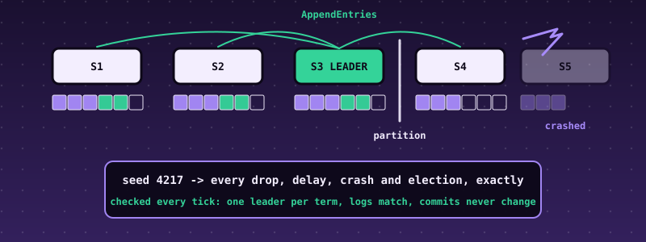

55. Raft Consensus, Tested by Deterministic Simulation: Elections, a Replicated Log, and a Seed That Replays Every Failure¶

What you will understand: how a group of servers keeps one log in the same order everywhere while servers crash and the network loses, delays, duplicates, reorders and splits messages, and how to find out whether an implementation of that is correct. A Raft node (055_raft.h/055_raft.c) is a pure state machine: leader election with randomized timeouts and one vote per term, log replication with a consistency check, and a commit rule that never counts replicas of an earlier term's entry (the paper's Figure 8). A deterministic simulator (055_sim.h/055_sim.c) plays the network, the disks and the clients from one seeded random generator, so a seed fully determines a run and a failure found on seed 10,059 is replayed exactly by running seed 10,059 again. After every tick the simulator checks Raft's safety properties against a global view no real node has. The kernel runs clusters of 3, 5 and 7 nodes, sweeps seeds with no violation, then switches two deliberate bugs on and shows the simulator finding each, with the seed, the tick and the property broken.
What you need to know first: Chapter 53's write-ahead log (the idea that state must be saved before a reply leaves), Chapter 54's habit of an independent implementation, and the cumulative kernel. No distributed-systems background is assumed.
Scope: two confirmed choices before writing any code¶
Third of the further case studies. One AskUserQuestion round: core "Election + replication + persistence + simulator" (recommended; adding log compaction and a smaller election-and-replication-only version were offered and not chosen); hardening "Full discipline".
Where the design comes from, said plainly¶
There is no real data here. The algorithm is Raft as described by Ongaro and Ousterhout, "In Search of an Understandable Consensus Algorithm" (USENIX ATC 2014): the rules, the property names (election safety, leader completeness, log matching, state machine safety) and the two example scenarios used as tests (Figure 7, Figure 8) are the author's reading of that paper. The paper was not reachable from the sandbox that built this book, so nothing was checked against its text; the Figure 7 and Figure 8 logs in the tests are written from the author's memory of the figures. The independent Python implementation shares that reading. What is checked, hard, is that the two implementations agree on every message of every run, that the safety properties hold over more than twenty thousand runs, and that the simulator catches deliberate mistakes.
What the node does and does not do¶
A node keeps persistent state (current term, who it voted for in that term, the log) that must be saved before any reply leaves it, and volatile state (its role, commit index, timers; for a leader, how much of each follower's log it believes matches). Five rules do all the work:
- Terms. A term number only grows. A message from a higher term turns any node into a follower of that term and clears its vote.
- Votes. A node grants at most one vote per term, and only to a candidate whose log is at least as up to date as its own: a higher last term wins; with equal last terms the longer log wins. This is what stops a stale server from becoming leader and erasing committed entries.
- Leaders. A candidate that gets votes from a majority becomes leader and appends a no-op (command 0) so that it can commit at once.
- Replication. A leader sends each follower the entries after
nextIndextogether with the index and term of the entry just before them. A follower that does not hold that entry refuses and the leader backs up one entry and retries. A follower that finds a conflicting entry deletes it and everything after it, but never deletes a matching one (a delayed duplicate must not truncate a longer log). -
Commit. A leader advances
commitIndexonly to an index whose entry is of its own term and held by a majority; entries of earlier terms then become committed indirectly. Counting replicas of an old-term entry is unsafe: Figure 8 of the paper shows how a majority-held old entry can still be overwritten. -
Not covered: cluster membership changes, log compaction and snapshots, read-only queries (so no linearizable reads), a real network or disk. A log holds at most 64 entries; a cluster 3 to 7 nodes.
- Persistence is modelled, not implemented: the simulator saves a node's persistent state atomically after every step and before any message of that step is delivered. Chapter 53's store could back the same hook; this chapter does not claim crash-safe storage, only that the node's use of it is correct.
The node and the simulator¶
/* Chapter 55: the Raft consensus algorithm (Ongaro and Ousterhout, "In Search of an Understandable Consensus Algorithm", 2014): a group of servers keeps one replicated log in the same order everywhere, survives crashes and lost, delayed,
* duplicated and reordered messages, and never lets two servers disagree about a committed entry, as long as a majority can talk to each other.
*
* THE NODE here is a pure state machine: it does no I/O and has no clock of its own. The caller (the simulator of 055_sim.c, or a real network layer) hands it ticks and incoming messages and a random number, and collects the messages it wants sent.
* persistent state (must survive a crash, saved BEFORE any reply leaves the node): currentTerm, votedFor, the log -> raft_disk_t, raft_t.dirty says "save me"
* volatile state: role, commitIndex, lastApplied, election and heartbeat timers, and for a leader nextIndex[] and matchIndex[]
* RULES, as in the paper: (1) a term number only ever grows; a message from a higher term turns any node into a follower of it. (2) A node grants at most one vote per term, and only to a candidate whose log is at least as up to date as its own
* (higher last term, or equal last term and at least as long). (3) A candidate with votes from a majority becomes leader. (4) A leader appends client commands, sends them with the index and term of the entry just before them (the consistency
* check); a follower that does not hold that entry refuses and the leader backs up. A follower that finds a conflicting entry deletes it and everything after it. (5) A leader may advance commitIndex only to an index of its OWN term that a majority
* holds (entries of earlier terms become committed indirectly) -- the rule of the paper's Figure 8. A new leader appends a no-op (command 0) so that it can commit at once.
* NOT covered: cluster membership changes, log compaction and snapshots, read-only queries, and a real network or disk (the simulator models the disk as an atomic save and the network as a lossy queue). Not a production Raft. */
#ifndef RAFT_H
#define RAFT_H
#include <stdint.h>
#define RAFT_MAX_NODES 7
#define RAFT_LOG_MAX 64
#define RAFT_MAX_ENT 4 /* entries carried by one AppendEntries */
#define RAFT_ELECT_MIN 10 /* election timeout, in ticks: RAFT_ELECT_MIN + a random number below RAFT_ELECT_RANGE */
#define RAFT_ELECT_RANGE 10
#define RAFT_HEARTBEAT 3
enum { RAFT_FOLLOWER = 0, RAFT_CANDIDATE = 1, RAFT_LEADER = 2 };
enum { RAFT_MSG_RV = 1, RAFT_MSG_RVR = 2, RAFT_MSG_AE = 3, RAFT_MSG_AER = 4 };
enum { RAFT_OK = 0, RAFT_ERR_NOT_LEADER = -1, RAFT_ERR_FULL = -2 };
/* deliberate bugs, switched on by the tests and by one part of the kernel demo, to show the simulator finding them: 0 = none */
enum { RAFT_BUG_NONE = 0, RAFT_BUG_NO_LOG_CHECK_IN_VOTE = 1, RAFT_BUG_COMMIT_OLD_TERM = 2, RAFT_BUG_VOTE_NOT_PERSISTED = 3, RAFT_BUG_NO_CONSISTENCY_CHECK = 4, RAFT_BUG_MINORITY_COMMIT = 5, RAFT_BUG_COMMIT_REGRESS = 6 };
extern int raft_bug;
typedef struct { uint32_t term, cmd; } raft_ent_t;
typedef struct { uint32_t term; int32_t voted_for; uint32_t log_len; raft_ent_t log[RAFT_LOG_MAX]; } raft_disk_t; /* log index i (1-based) is log[i - 1] */
typedef struct {
uint8_t type, from, to; uint32_t term;
uint32_t last_idx, last_term; /* RequestVote: the candidate's last log index and term */
uint8_t granted; /* RequestVote reply */
uint32_t prev_idx, prev_term, commit, nent; raft_ent_t ent[RAFT_MAX_ENT]; /* AppendEntries */
uint8_t success; uint32_t match; /* AppendEntries reply: on success the highest index now known to match */
} raft_msg_t;
typedef struct {
int id, n, role, leader; raft_disk_t d; int dirty;
uint32_t commit, applied, elapsed, timeout, hb, votes; uint32_t next[RAFT_MAX_NODES], match[RAFT_MAX_NODES];
uint32_t sm_count, sm_hash; /* the replicated state machine: the number of client commands applied and a hash chain over them (no-ops are not counted) */
} raft_t;
void raft_init(raft_t *r, int id, int n, const raft_disk_t *disk, uint32_t rnd); /* disk may be 0 (a new node); a restarted node passes what it saved */
int raft_tick(raft_t *r, uint32_t rnd, raft_msg_t *out); /* returns the number of messages to send (at most n) */
int raft_recv(raft_t *r, const raft_msg_t *m, uint32_t rnd, raft_msg_t *out);
int raft_propose(raft_t *r, uint32_t cmd, uint32_t *index); /* RAFT_OK and the entry's index, or an error; cmd 0 is reserved for the no-op */
#endif
/* Chapter 55: the Raft node (see 055_raft.h). Freestanding: no libc, no libgcc. */
#include "055_raft.h"
int raft_bug = RAFT_BUG_NONE;
static int popcount(uint32_t v) { int c = 0; while (v) { c += (int)(v & 1u); v >>= 1; } return c; }
static uint32_t last_index(const raft_t *r) { return r->d.log_len; }
static uint32_t term_at(const raft_t *r, uint32_t idx) { return idx == 0 ? 0 : r->d.log[idx - 1].term; }
static void reset_timer(raft_t *r, uint32_t rnd) { r->elapsed = 0; r->timeout = RAFT_ELECT_MIN + rnd % RAFT_ELECT_RANGE; }
static void apply_committed(raft_t *r) { while (r->applied < r->commit && r->applied < r->d.log_len) { r->applied++; uint32_t c = r->d.log[r->applied - 1].cmd; if (c != 0) { r->sm_count++; r->sm_hash = (r->sm_hash ^ c) * 16777619u; } } }
static void become_follower(raft_t *r, uint32_t term) { if (term > r->d.term) { r->d.term = term; r->d.voted_for = -1; r->dirty = 1; } r->role = RAFT_FOLLOWER; r->votes = 0; }
void raft_init(raft_t *r, int id, int n, const raft_disk_t *disk, uint32_t rnd) {
uint8_t *p = (uint8_t *)r; for (uint32_t i = 0; i < sizeof *r; i++) { p[i] = 0; } r->id = id; r->n = n; r->leader = -1; r->role = RAFT_FOLLOWER; r->d.voted_for = -1;
if (disk) { r->d = *disk; if (raft_bug == RAFT_BUG_VOTE_NOT_PERSISTED) { r->d.voted_for = -1; } } /* the bug: the vote was only ever kept in memory, so a restart forgets it */ reset_timer(r, rnd); r->sm_hash = 2166136261u;
}
static void make_ae(const raft_t *r, int to, raft_msg_t *m) {
uint32_t nx = r->next[to] < 1 ? 1 : r->next[to]; uint32_t prev = nx - 1; /* nextIndex is never below 1 */ uint32_t cnt = last_index(r) >= nx ? last_index(r) - nx + 1 : 0; if (cnt > RAFT_MAX_ENT) { cnt = RAFT_MAX_ENT; }
uint8_t *z = (uint8_t *)m; for (uint32_t i = 0; i < sizeof *m; i++) { z[i] = 0; } m->type = RAFT_MSG_AE; m->from = (uint8_t)r->id; m->to = (uint8_t)to; m->term = r->d.term; m->prev_idx = prev; m->prev_term = term_at(r, prev); m->commit = r->commit; m->nent = cnt;
for (uint32_t i = 0; i < cnt; i++) { m->ent[i] = r->d.log[nx - 1 + i]; }
}
static int broadcast_ae(raft_t *r, raft_msg_t *out) { int k = 0; for (int i = 0; i < r->n; i++) { if (i != r->id) { make_ae(r, i, &out[k++]); } } return k; }
static void advance_commit(raft_t *r) {
for (uint32_t idx = last_index(r); idx > r->commit; idx--) {
int same_term = r->d.log[idx - 1].term == r->d.term || raft_bug == RAFT_BUG_COMMIT_OLD_TERM; /* the paper's Figure 8 rule: only an entry of the leader's own term is committed by counting replicas */
if (!same_term) { continue; } int c = 1; for (int i = 0; i < r->n; i++) { if (i != r->id && r->match[i] >= idx) { c++; } }
if (raft_bug == RAFT_BUG_MINORITY_COMMIT ? c >= r->n / 2 : c > r->n / 2) { r->commit = idx; break; }
}
apply_committed(r);
}
int raft_tick(raft_t *r, uint32_t rnd, raft_msg_t *out) {
r->elapsed++;
if (r->role == RAFT_LEADER) { r->hb++; if (r->hb >= RAFT_HEARTBEAT) { r->hb = 0; return broadcast_ae(r, out); } return 0; }
if (r->elapsed < r->timeout) { return 0; }
r->d.term++; r->d.voted_for = r->id; r->dirty = 1; r->role = RAFT_CANDIDATE; r->votes = 1u << r->id; r->leader = -1; reset_timer(r, rnd); int k = 0;
for (int i = 0; i < r->n; i++) { if (i == r->id) { continue; } raft_msg_t *m = &out[k++]; uint8_t *z = (uint8_t *)m; for (uint32_t j = 0; j < sizeof *m; j++) { z[j] = 0; } m->type = RAFT_MSG_RV; m->from = (uint8_t)r->id; m->to = (uint8_t)i; m->term = r->d.term; m->last_idx = last_index(r); m->last_term = term_at(r, last_index(r)); }
return k;
}
static void reply(const raft_t *r, const raft_msg_t *req, raft_msg_t *m) { uint8_t *z = (uint8_t *)m; for (uint32_t i = 0; i < sizeof *m; i++) { z[i] = 0; } m->from = (uint8_t)r->id; m->to = req->from; m->term = r->d.term; }
int raft_recv(raft_t *r, const raft_msg_t *m, uint32_t rnd, raft_msg_t *out) {
if (m->to != r->id || m->from >= r->n || m->from == r->id) { return 0; }
if (m->term > r->d.term) { become_follower(r, m->term); }
if (m->type == RAFT_MSG_RV) {
raft_msg_t *o = &out[0]; reply(r, m, o); o->type = RAFT_MSG_RVR; o->granted = 0;
if (m->term == r->d.term && (r->d.voted_for == -1 || r->d.voted_for == m->from)) {
uint32_t lt = term_at(r, last_index(r)), li = last_index(r); int up_to_date = m->last_term > lt || (m->last_term == lt && m->last_idx >= li); /* the candidate's log is at least as up to date as ours */
if (raft_bug == RAFT_BUG_NO_LOG_CHECK_IN_VOTE) { up_to_date = 1; }
if (up_to_date) { r->d.voted_for = m->from; r->dirty = 1; o->granted = 1; reset_timer(r, rnd); }
}
o->term = r->d.term; return 1;
}
if (m->type == RAFT_MSG_RVR) {
if (r->role != RAFT_CANDIDATE || m->term != r->d.term || !m->granted) { return 0; }
r->votes |= 1u << m->from; if (popcount(r->votes) <= r->n / 2) { return 0; }
r->role = RAFT_LEADER; r->leader = r->id; r->hb = 0; for (int i = 0; i < r->n; i++) { r->next[i] = last_index(r) + 1; r->match[i] = 0; }
if (last_index(r) < RAFT_LOG_MAX) { r->d.log[r->d.log_len].term = r->d.term; r->d.log[r->d.log_len].cmd = 0; r->d.log_len++; r->dirty = 1; r->match[r->id] = last_index(r); } /* the no-op of a new leader */
return broadcast_ae(r, out);
}
if (m->type == RAFT_MSG_AE) {
raft_msg_t *o = &out[0]; reply(r, m, o); o->type = RAFT_MSG_AER; o->success = 0;
if (m->term < r->d.term) { return 1; }
r->role = RAFT_FOLLOWER; r->leader = m->from; reset_timer(r, rnd);
if (raft_bug != RAFT_BUG_NO_CONSISTENCY_CHECK && (m->prev_idx > last_index(r) || (m->prev_idx > 0 && term_at(r, m->prev_idx) != m->prev_term))) { return 1; } /* the consistency check fails: the leader will back up */
for (uint32_t k = 0; k < m->nent; k++) {
uint32_t idx = m->prev_idx + 1 + k;
if (idx <= last_index(r) && r->d.log[idx - 1].term != m->ent[k].term) { r->d.log_len = idx - 1; r->dirty = 1; } /* a conflicting entry: delete it and all that follow */
if (idx > last_index(r)) { if (r->d.log_len >= RAFT_LOG_MAX) { return 1; } r->d.log[r->d.log_len++] = m->ent[k]; r->dirty = 1; }
}
uint32_t mi = m->prev_idx + m->nent; uint32_t nc = m->commit < mi ? m->commit : mi; if (nc > r->commit || raft_bug == RAFT_BUG_COMMIT_REGRESS) { r->commit = nc; apply_committed(r); } /* only ever forward: a delayed, reordered message must not move commitIndex back */
o->success = 1; o->match = mi; return 1;
}
if (m->type == RAFT_MSG_AER) {
if (r->role != RAFT_LEADER || m->term != r->d.term) { return 0; }
if (m->success) { if (m->match > r->match[m->from]) { r->match[m->from] = m->match; } r->next[m->from] = r->match[m->from] + 1; advance_commit(r); return 0; }
if (r->next[m->from] > 1) { r->next[m->from]--; } make_ae(r, m->from, &out[0]); return 1; /* back up one entry and try again at once */
}
return 0;
}
int raft_propose(raft_t *r, uint32_t cmd, uint32_t *index) {
if (r->role != RAFT_LEADER) { return RAFT_ERR_NOT_LEADER; } if (cmd == 0 || r->d.log_len >= RAFT_LOG_MAX) { return RAFT_ERR_FULL; }
r->d.log[r->d.log_len].term = r->d.term; r->d.log[r->d.log_len].cmd = cmd; r->d.log_len++; r->dirty = 1; r->match[r->id] = last_index(r); if (index) { *index = last_index(r); } return RAFT_OK;
}
/* Chapter 55: a DETERMINISTIC SIMULATOR for Raft. Every source of nondeterminism a real cluster has (message loss, duplication, delay and reordering, network partitions, crashes and restarts, when clients speak, every node's timeout)
* is drawn from one seeded pseudo-random generator, so a seed fully determines a run: a failure found on seed 4,217 is replayed exactly by running seed 4,217 again. The simulator plays the network, the disks and the clients, and after EVERY tick
* it checks the safety properties of the Raft paper (Figure 3) against a global view no real node has:
* violation 1 ELECTION SAFETY two different leaders in one term
* violation 2 LOG MATCHING two logs hold an entry with the same index and term but differ in it or before it
* violation 3 STATE MACHINE SAFETY two nodes (or one node at two times) hold different entries at one COMMITTED index
* violation 4 LEADER COMPLETENESS a leader of a later term lacks an entry committed in an earlier term
* violation 5 DURABILITY a client command that was acknowledged (committed at its leader) is not in the committed log
* violation 6 MONOTONICITY a term, or a commit index of a node that has not restarted, went backwards
* The disk is modelled as an atomic save of the persistent state after every node step, before any message of that step is sent (the rule the paper requires). The network is a lossy queue; links are cut by partitions. */
#ifndef SIM_H
#define SIM_H
#include <stdint.h>
#include "055_raft.h"
#define SIM_QMAX 256
#define SIM_PMAX 128
#define SIM_TERMS 256
typedef struct { uint32_t drop_pm, dup_pm, delay_max, part_pm, heal_pm, crash_pm, restart_pm, propose_pm, ticks, target_pm; int n; } sim_cfg_t; /* probabilities in parts per thousand per tick or per message */
typedef struct { uint32_t term, cmd, ct; } sim_gc_t;
typedef struct { uint32_t idx, term, cmd; int node, acked; } sim_prop_t;
typedef struct { uint32_t at; raft_msg_t m; } sim_q_t;
typedef struct {
sim_cfg_t cfg; uint32_t t, rs, trace, next_cmd; raft_t node[RAFT_MAX_NODES]; raft_disk_t disk[RAFT_MAX_NODES]; int alive[RAFT_MAX_NODES], group[RAFT_MAX_NODES], partitioned;
sim_q_t q[SIM_QMAX]; int nq; sim_gc_t gc[RAFT_LOG_MAX]; uint32_t gc_len; uint8_t leader_of_term[SIM_TERMS]; sim_prop_t p[SIM_PMAX]; int np;
uint32_t last_commit[RAFT_MAX_NODES], last_term[RAFT_MAX_NODES];
int viol; uint32_t viol_tick; int viol_node; /* the first violation found, 0 if none */
uint32_t sent, delivered, dropped, dups, elections, crashes, restarts, proposals, acked, saves, max_commit, first_leader_tick, qfull;
} sim_t;
void sim_config(sim_cfg_t *c, uint32_t seed); /* the fault profile of a seed: its node count (3, 5 or 7), its mix of faults, its length */
void sim_start(sim_t *s, const sim_cfg_t *c, uint32_t seed);
int sim_step(sim_t *s); /* one tick; returns 0 while no violation has been found */
int sim_run(sim_t *s, const sim_cfg_t *c, uint32_t seed); /* runs c->ticks ticks or until a violation; returns the violation code (0 = none) */
const char *sim_viol_name(int v);
#endif
/* Chapter 55: the Raft simulator (see 055_sim.h). Freestanding. The order in which random numbers are drawn is part of the specification: raft_ref.py makes the same draws in the same order. */
#include "055_sim.h"
static uint32_t rnd(sim_t *s) { s->rs = s->rs * 1664525u + 1013904223u; return s->rs >> 8; }
static void mix(sim_t *s, uint32_t v) { s->trace = (s->trace ^ (v & 0xFF)) * 16777619u; s->trace = (s->trace ^ ((v >> 8) & 0xFF)) * 16777619u; s->trace = (s->trace ^ ((v >> 16) & 0xFF)) * 16777619u; s->trace = (s->trace ^ ((v >> 24) & 0xFF)) * 16777619u; }
const char *sim_viol_name(int v) { switch (v) { case 0: return "none"; case 1: return "election safety (two leaders in one term)"; case 2: return "log matching"; case 3: return "state machine safety (a committed entry differs)"; case 4: return "leader completeness (a leader lacks a committed entry)";
case 5: return "durability (an acknowledged command is not committed)"; case 6: return "monotonicity (a term or commit index went backwards)"; } return "?"; }
void sim_config(sim_cfg_t *c, uint32_t seed) {
static const int NS[3] = {3, 5, 7}; c->n = NS[(seed / 4) % 3]; c->ticks = 300; c->propose_pm = 80; c->drop_pm = 0; c->dup_pm = 0; c->delay_max = 3; c->part_pm = 0; c->heal_pm = 60; c->crash_pm = 0; c->restart_pm = 0; c->target_pm = 0;
switch (seed % 4) { case 0: break; /* a calm network */
case 1: c->drop_pm = 200; c->dup_pm = 100; c->delay_max = 9; break; /* a lossy, reordering network */
case 2: c->part_pm = 20; c->heal_pm = 50; c->delay_max = 5; break; /* partitions */
default: c->drop_pm = 100; c->dup_pm = 60; c->delay_max = 7; c->part_pm = 15; c->heal_pm = 50; c->crash_pm = 30; c->restart_pm = 80; c->target_pm = 70; break; } /* everything at once */
}
static void save(sim_t *s, int i) { if (s->node[i].dirty) { s->disk[i] = s->node[i].d; s->node[i].dirty = 0; s->saves++; } }
static void push(sim_t *s, const raft_msg_t *m) { if (s->nq >= SIM_QMAX) { s->qfull++; return; } uint32_t delay = 1 + rnd(s) % s->cfg.delay_max; s->q[s->nq].at = s->t + delay; s->q[s->nq].m = *m; s->nq++; }
static void send(sim_t *s, const raft_msg_t *m) { s->sent++; if (rnd(s) % 1000 < s->cfg.drop_pm) { s->dropped++; return; } int copies = 1; if (rnd(s) % 1000 < s->cfg.dup_pm) { copies = 2; s->dups++; } for (int k = 0; k < copies; k++) { push(s, m); } }
static int linked(const sim_t *s, int a, int b) { return !s->partitioned || s->group[a] == s->group[b]; }
static void start_node(sim_t *s, int i, int fresh) { raft_init(&s->node[i], i, s->cfg.n, fresh ? 0 : &s->disk[i], rnd(s)); s->alive[i] = 1; s->last_commit[i] = 0; }
void sim_start(sim_t *s, const sim_cfg_t *c, uint32_t seed) {
uint8_t *z = (uint8_t *)s; for (uint32_t i = 0; i < sizeof *s; i++) { z[i] = 0; } s->cfg = *c; s->rs = seed * 2654435761u + 12345u; s->trace = 2166136261u; s->next_cmd = 1;
for (int i = 0; i < c->n; i++) { s->disk[i].voted_for = -1; start_node(s, i, 1); }
}
static void viol(sim_t *s, int v, int node) { if (!s->viol) { s->viol = v; s->viol_tick = s->t; s->viol_node = node; } }
static void check(sim_t *s) {
int n = s->cfg.n; uint32_t maxterm = 0;
for (int i = 0; i < n; i++) { uint32_t tm = s->alive[i] ? s->node[i].d.term : s->disk[i].term; if (tm > maxterm) { maxterm = tm; } }
for (int i = 0; i < n; i++) { if (!s->alive[i]) { continue; } const raft_t *r = &s->node[i];
if (r->d.term < s->last_term[i]) { viol(s, 6, i); } s->last_term[i] = r->d.term; if (r->commit < s->last_commit[i]) { viol(s, 6, i); } s->last_commit[i] = r->commit; if (r->commit > s->max_commit) { s->max_commit = r->commit; }
if (r->role == RAFT_LEADER && r->d.term < SIM_TERMS) { if (s->leader_of_term[r->d.term] == 0) { s->leader_of_term[r->d.term] = (uint8_t)(i + 1); s->elections++; if (!s->first_leader_tick) { s->first_leader_tick = s->t; } } else if (s->leader_of_term[r->d.term] != i + 1) { viol(s, 1, i); } } }
for (int i = 0; i < n; i++) { for (int j = i + 1; j < n; j++) { if (!s->alive[i] || !s->alive[j]) { continue; } const raft_t *a = &s->node[i], *b = &s->node[j]; uint32_t m = a->d.log_len < b->d.log_len ? a->d.log_len : b->d.log_len;
for (uint32_t k = m; k >= 1; k--) { if (a->d.log[k - 1].term == b->d.log[k - 1].term) { for (uint32_t q = 1; q <= k; q++) { if (a->d.log[q - 1].term != b->d.log[q - 1].term || a->d.log[q - 1].cmd != b->d.log[q - 1].cmd) { viol(s, 2, i); } } break; } } } }
for (int i = 0; i < n; i++) { if (!s->alive[i]) { continue; } const raft_t *r = &s->node[i];
for (uint32_t k = 1; k <= r->commit && k <= s->gc_len; k++) { if (k > r->d.log_len || r->d.log[k - 1].term != s->gc[k - 1].term || r->d.log[k - 1].cmd != s->gc[k - 1].cmd) { viol(s, 3, i); } }
while (s->gc_len < r->commit && s->gc_len < RAFT_LOG_MAX) { if (r->d.log_len <= s->gc_len) { viol(s, 3, i); break; } s->gc[s->gc_len].term = r->d.log[s->gc_len].term; s->gc[s->gc_len].cmd = r->d.log[s->gc_len].cmd; s->gc[s->gc_len].ct = maxterm; s->gc_len++; } }
for (int i = 0; i < n; i++) { if (!s->alive[i] || s->node[i].role != RAFT_LEADER) { continue; } const raft_t *r = &s->node[i];
for (uint32_t k = 1; k <= s->gc_len; k++) { if (r->d.term > s->gc[k - 1].ct && (r->d.log_len < k || r->d.log[k - 1].term != s->gc[k - 1].term || r->d.log[k - 1].cmd != s->gc[k - 1].cmd)) { viol(s, 4, i); } } }
for (int k = 0; k < s->np; k++) { sim_prop_t *p = &s->p[k]; const raft_t *r = &s->node[p->node];
if (!p->acked && s->alive[p->node] && r->role == RAFT_LEADER && r->d.term == p->term && r->commit >= p->idx && r->d.log[p->idx - 1].term == p->term && r->d.log[p->idx - 1].cmd == p->cmd) { p->acked = 1; s->acked++; }
if (p->acked && (s->gc_len < p->idx || s->gc[p->idx - 1].cmd != p->cmd)) { viol(s, 5, p->node); } }
}
int sim_step(sim_t *s) {
int n = s->cfg.n; s->t++; raft_msg_t out[RAFT_MAX_NODES];
uint32_t r = rnd(s); if (!s->partitioned) { if (r % 1000 < s->cfg.part_pm) { s->partitioned = 1; for (int i = 0; i < n; i++) { s->group[i] = (int)(rnd(s) % 3); } } } else if (r % 1000 < s->cfg.heal_pm) { s->partitioned = 0; }
r = rnd(s); if (r % 1000 < s->cfg.crash_pm) { int i = (int)(rnd(s) % (uint32_t)n); if (s->cfg.target_pm && rnd(s) % 100 < s->cfg.target_pm) { for (int k = 0; k < n; k++) { if (s->alive[k] && s->node[k].role == RAFT_LEADER) { i = k; break; } } } /* an adversary that likes to kill leaders */ if (s->alive[i]) { s->alive[i] = 0; s->crashes++; } }
r = rnd(s); if (r % 1000 < s->cfg.restart_pm) { int i = (int)(rnd(s) % (uint32_t)n); if (!s->alive[i]) { start_node(s, i, 0); s->restarts++; } }
r = rnd(s); if (r % 1000 < s->cfg.propose_pm) { int i = (int)(rnd(s) % (uint32_t)n); uint32_t idx; if (s->alive[i] && s->node[i].role == RAFT_LEADER && s->np < SIM_PMAX && raft_propose(&s->node[i], s->next_cmd, &idx) == RAFT_OK) {
s->p[s->np].idx = idx; s->p[s->np].term = s->node[i].d.term; s->p[s->np].cmd = s->next_cmd; s->p[s->np].node = i; s->p[s->np].acked = 0; s->np++; s->next_cmd++; s->proposals++; save(s, i); } }
int nq = s->nq; for (int k = 0; k < nq; k++) { if (s->q[k].at != s->t) { continue; } raft_msg_t m = s->q[k].m; uint32_t rr = rnd(s);
if (s->alive[m.to] && linked(s, m.from, m.to)) { s->delivered++; mix(s, s->t); mix(s, m.from); mix(s, m.to); mix(s, m.type); mix(s, m.term); mix(s, m.nent + m.success + m.granted); int c = raft_recv(&s->node[m.to], &m, rr, out); save(s, m.to); for (int j = 0; j < c; j++) { send(s, &out[j]); } } }
{ int w = 0; for (int k = 0; k < s->nq; k++) { if (s->q[k].at > s->t) { s->q[w++] = s->q[k]; } } s->nq = w; }
for (int i = 0; i < n; i++) { if (!s->alive[i]) { continue; } int c = raft_tick(&s->node[i], rnd(s), out); save(s, i); for (int j = 0; j < c; j++) { send(s, &out[j]); } }
for (int i = 0; i < n; i++) { if (s->alive[i]) { mix(s, (uint32_t)i); mix(s, (uint32_t)s->node[i].role); mix(s, s->node[i].d.term); mix(s, s->node[i].d.log_len); mix(s, s->node[i].commit); } }
check(s); return s->viol;
}
int sim_run(sim_t *s, const sim_cfg_t *c, uint32_t seed) { sim_start(s, c, seed); for (uint32_t k = 0; k < c->ticks && !s->viol; k++) { sim_step(s); } return s->viol; }
Why a simulator. A distributed protocol is wrong in ways that appear one run in a million, depend on the order of events, and cannot be repeated. Here every source of nondeterminism is one pseudo-random stream: each tick the simulator may cut or heal a partition, crash a node (a profile prefers the current leader: an adversary), restart one from its saved state, let a client speak to a node, deliver the messages due this tick (each was dropped with some probability, duplicated with some, and delayed by 1 to 9 ticks, which reorders them), and tick every live node. Seed 0 and seed 1 are different worlds; the same seed is the same world, to the message. The trace hash at the end of a run, a hash of every delivered message and every node's state after every tick, is the fingerprint of the whole run.
The six properties the simulator checks after every tick (from the paper's Figure 3):
| # | property | what a violation means |
|---|---|---|
| 1 | election safety | two different leaders in one term |
| 2 | log matching | two logs hold an entry with the same index and term but differ in it or before it |
| 3 | state machine safety | two nodes (or one node at two times) hold different entries at one committed index |
| 4 | leader completeness | a leader of a later term lacks an entry committed in an earlier term |
| 5 | durability | a client command that was acknowledged is not in the committed log |
| 6 | monotonicity | a term, or the commit index of a node that has not restarted, went backwards |
Data and scenarios¶
There is no input data: a run is a seed. The fault profile of a seed is seed % 4 (0 calm network; 1 loss, duplication and reordering; 2 partitions; 3 everything at once with crashes aimed at the leader) and its size is 3, 5 or 7 nodes ((seed / 4) % 3). Test scenarios are the paper's Figure 7 (a leader with a ten-entry log brings six followers with logs that are too short, too long, or from other terms into line) and Figure 8 (an entry from term 2 replicated on a majority must not be committed by a term-4 leader).
055_kmain.c: the Raft demo¶
/* =====================================================================================================================
* Chapter 55: the Raft demo. Nothing here touches a network or a disk: a cluster of three to seven Raft nodes (055_raft.c) lives inside the DETERMINISTIC SIMULATOR (055_sim.c), which plays the network, the disks and the clients from one seeded random generator and
* checks Raft's safety properties after every tick. (1) Twelve seeds, one summary line each (verify_055.py replays them in Python and compares everything including a hash of the whole run), and the final state of every node of one calm and one very faulty run.
* (2) A sweep of 120 seeds covering the four fault profiles: no violation may occur. (3) Two DELIBERATE bugs are switched on in the node (a vote granted without checking the candidate's log; a vote forgotten by a restart): the simulator must find each, the demo prints
* the seed, tick and property, and replays the seed to show the failure is exactly reproducible. */
static sim_t g_sim, g_sim2;
static uint32_t g_rf_seeds, g_rf_viol, g_rf_found, g_rf_replay;
static void rf_hex8(uint32_t v, char *o) { static const char H[] = "0123456789abcdef"; for (int i = 0; i < 8; i++) { o[i] = H[(v >> (28 - 4 * i)) & 15]; } o[8] = 0; }
static void rf_line(uint32_t seed, const sim_cfg_t *c, const sim_t *s) { char h[12]; rf_hex8(s->trace, h);
kprintf("seed %u n %d viol %d tick %u node %d sent %u delivered %u dropped %u dups %u elections %u crashes %u restarts %u proposals %u acked %u saves %u maxcommit %u firstleader %u trace %s\n", (unsigned)seed, c->n, s->viol, (unsigned)(s->viol ? s->viol_tick : 0), s->viol ? s->viol_node : -1,
(unsigned)s->sent, (unsigned)s->delivered, (unsigned)s->dropped, (unsigned)s->dups, (unsigned)s->elections, (unsigned)s->crashes, (unsigned)s->restarts, (unsigned)s->proposals, (unsigned)s->acked, (unsigned)s->saves, (unsigned)s->max_commit, (unsigned)s->first_leader_tick, h); }
static void rf_nodes(const sim_t *s) { static const char *RN[3] = {"follower", "candidate", "leader"};
for (int i = 0; i < s->cfg.n; i++) { const raft_t *r = &s->node[i]; kprintf(" node %d: %s, %s, term %u, log length %u, commit %u, applied %u, state machine: %u commands, hash %x\n", i, s->alive[i] ? "up " : "DOWN", RN[r->role], (unsigned)r->d.term, (unsigned)r->d.log_len, (unsigned)r->commit, (unsigned)r->applied, (unsigned)r->sm_count, (unsigned)r->sm_hash); } }
static void raft_demo(void) {
kprintf("\nStarting this chapter's own Raft demo (a replicated log that survives crashes, partitions and lost messages, tested by deterministic simulation)...\n");
__asm__ volatile ("cli"); sim_cfg_t c;
kprintf("\n== Part 1. Twelve seeds, one line each (seed mod 4 picks the fault profile: 0 calm network, 1 loss/duplication/reordering, 2 partitions, 3 everything plus crashes of the leader)\n@@RAFT SEEDS BEGIN\n");
for (uint32_t seed = 0; seed < 12; seed++) { sim_config(&c, seed); sim_run(&g_sim, &c, seed); rf_line(seed, &c, &g_sim); g_rf_seeds++; if (g_sim.viol) { g_rf_viol++; } }
kprintf("@@RAFT SEEDS END\n");
sim_config(&c, 4); sim_run(&g_sim, &c, 4); kprintf(" the final state of the five nodes of seed 4 (a calm network): every node holds the same log up to its commit index, and the leader's no-op plus %u client commands are replicated\n", (unsigned)g_sim.proposals); rf_nodes(&g_sim);
sim_config(&c, 43); sim_run(&g_sim, &c, 43); kprintf(" the final state of the five nodes of seed 43 (loss, partitions, crashes of the leader): %u crashes, %u restarts, %u elections; the nodes that are up agree on every committed entry\n", (unsigned)g_sim.crashes, (unsigned)g_sim.restarts, (unsigned)g_sim.elections); rf_nodes(&g_sim);
kprintf("\n== Part 2. A sweep of 120 seeds (30 of each fault profile, 3, 5 and 7 nodes), every safety property checked after every tick\n@@RAFT SWEEP BEGIN\n");
{ uint32_t el[4] = {0}, pr[4] = {0}, ak[4] = {0}, cr[4] = {0}, ms[4] = {0}, bad[4] = {0}; for (uint32_t seed = 100; seed < 220; seed++) { sim_config(&c, seed); sim_run(&g_sim, &c, seed); uint32_t p = seed % 4; el[p] += g_sim.elections; pr[p] += g_sim.proposals; ak[p] += g_sim.acked; cr[p] += g_sim.crashes; ms[p] += g_sim.delivered; if (g_sim.viol) { bad[p]++; g_rf_viol++; } g_rf_seeds++; }
static const char *PN[4] = {"calm network", "loss and reordering", "partitions", "everything + leader crashes"};
for (int p = 0; p < 4; p++) { kprintf("profile %d (%s): elections %u, client commands proposed %u, acknowledged %u, crashes %u, messages delivered %u, violations %u\n", p, PN[p], (unsigned)el[p], (unsigned)pr[p], (unsigned)ak[p], (unsigned)cr[p], (unsigned)ms[p], (unsigned)bad[p]); } }
kprintf("@@RAFT SWEEP END\n");
kprintf("\n== Part 3. Two deliberate bugs, and the simulator finding them\n@@RAFT BUGS BEGIN\n");
for (int which = 0; which < 2; which++) { int bug = which == 0 ? RAFT_BUG_NO_LOG_CHECK_IN_VOTE : RAFT_BUG_VOTE_NOT_PERSISTED; uint32_t from = which == 0 ? 0 : 10000, ticks = which == 0 ? 300 : 600; uint32_t found = 0, seed; raft_bug = bug;
for (seed = from; seed < from + 400; seed++) { sim_config(&c, seed); c.ticks = ticks; sim_run(&g_sim, &c, seed); if (g_sim.viol) { found = 1; break; } }
if (found) { g_rf_found++; char h[12]; rf_hex8(g_sim.trace, h); sim_run(&g_sim2, &c, seed); int same = g_sim2.viol == g_sim.viol && g_sim2.viol_tick == g_sim.viol_tick && g_sim2.trace == g_sim.trace; if (same) { g_rf_replay++; }
kprintf("bug %d seed %u ticks %u violation %d tick %u node %d trace %s replay_identical %d\n", bug, (unsigned)seed, (unsigned)ticks, g_sim.viol, (unsigned)g_sim.viol_tick, g_sim.viol_node, h, same); kprintf(" -> %s\n", sim_viol_name(g_sim.viol)); }
else { kprintf("bug %d: no violation found in 400 seeds from %u (BUG)\n", bug, (unsigned)from); } raft_bug = RAFT_BUG_NONE; }
kprintf("@@RAFT BUGS END\n");
kprintf(" bug 1 is a vote granted without comparing logs: it is found within the first few seeds. bug 3 is a vote that a restart forgets: it needs a leader killed at the wrong moment, and appeared only in about 1 seed in 2,500 (the search started at seed 10,000, where an earlier offline search had found it).\n");
kprintf("\nChapter 55 Raft demo complete: %u seeds simulated, %u violations by the correct node, %u deliberate bugs found, %u replays identical\n", (unsigned)g_rf_seeds, (unsigned)g_rf_viol, (unsigned)g_rf_found, (unsigned)g_rf_replay);
}
Building and booting it, for real¶
#!/bin/sh
# Usage: build.sh PREFIX [OUTDIR] e.g. build.sh 046 (run inside the chapter's code directory)
# Builds the cumulative kernel for one chapter: assembles every .asm, compiles every .c with the flags Chapter 1 introduced, links with PREFIX_linker.ld, builds the ring-3 user program as a
# separate ELF (boot module "user_program"), checks Multiboot2, and packs a GRUB ISO. Boot it with run.sh.
set -e
P=${1:?prefix}; OUT=${2:-build}; mkdir -p "$OUT/iso/boot/grub"
echo "=== Assembling ASM ==="
for f in ${P}_*.asm; do nasm -f elf32 "$f" -o "$OUT/$(basename "$f" .asm).o"; done
echo "=== Compiling C ==="
for f in ${P}_*.c; do [ "$f" = "${P}_user_program.c" ] && continue; gcc -m32 -ffreestanding -fno-stack-protector -fno-pic -Wall -Wextra -c "$f" -o "$OUT/$(basename "$f" .c).o"; done
echo "=== Linking kernel ==="
ld -m elf_i386 -T ${P}_linker.ld -o "$OUT/kernel.bin" $(ls "$OUT"/*.o | grep -v "${P}_user_program.o")
echo "=== Building user program ==="
gcc -m32 -ffreestanding -fno-stack-protector -fno-pic -c ${P}_user_program.c -o "$OUT/${P}_user_program.o"
ld -m elf_i386 -T ${P}_user_program.ld -o "$OUT/user_program" "$OUT/${P}_user_program.o" 2>/dev/null
echo "=== Checking multiboot2 ==="
grub-file --is-x86-multiboot2 "$OUT/kernel.bin" && echo MULTIBOOT_OK
cp "$OUT/kernel.bin" "$OUT/iso/boot/kernel.bin"; cp "$OUT/user_program" "$OUT/iso/boot/user_program"
printf 'set timeout=0\nset default=0\n\nmenuentry "Unix OS from Scratch" {\n multiboot2 /boot/kernel.bin\n module2 /boot/user_program user_program\n boot\n}\n' > "$OUT/iso/boot/grub/grub.cfg"
echo "=== Building ISO ==="
grub-mkrescue -o "$OUT/os.iso" "$OUT/iso" 2>&1 | tail -3
echo "=== DONE ==="
#!/bin/sh
# Usage: capture.sh [OUTDIR] -- boots OUTDIR/os.iso in QEMU (8 MiB raw disk, RTL8139 card, serial to OUTDIR/serial.txt), waits until the kernel prints this chapter's completion marker, then
# stops QEMU. The disk image OUTDIR/disk.img is KEPT: after the boot it holds the FAT16 volume with the report files, which verify_052.py reads from outside the kernel.
OUT=${1:-build}; MARK="Chapter 55 Raft demo complete"
rm -f "$OUT/disk.img" "$OUT/serial.txt"; qemu-img create -q -f raw "$OUT/disk.img" 8M
qemu-system-x86_64 -cdrom "$OUT/os.iso" -drive file="$OUT/disk.img",format=raw,if=ide,index=0 -serial file:"$OUT/serial.txt" -display none -no-reboot -m 64M \
-netdev user,id=n0 -device rtl8139,netdev=n0 &
PID=$!; i=0
while [ $i -lt ${WAIT:-170} ]; do
if grep -q "$MARK" "$OUT/serial.txt" 2>/dev/null; then break; fi
sleep 1; i=$((i + 1))
done
kill $PID 2>/dev/null; wait $PID 2>/dev/null
grep -q "$MARK" "$OUT/serial.txt" && echo "boot finished after about $i s: marker found" || echo "marker NOT found after $i s"
Output (cloud sandbox -- live-executed build output)
=== Assembling ASM ===
=== Compiling C ===
055_kmain.c:5996:17: warning: 'g_bk_cmds' defined but not used [-Wunused-variable]
5996 | static uint32_t g_bk_cmds, g_bk_trades_total, g_bk_files, g_bk_refused;
| ^~~~~~~~~
=== Linking kernel ===
ld: warning: build/055_usermode.o: missing .note.GNU-stack section implies executable stack
ld: NOTE: This behaviour is deprecated and will be removed in a future version of the linker
ld: warning: build/kernel.bin has a LOAD segment with RWX permissions
=== Building user program ===
=== Checking multiboot2 ===
MULTIBOOT_OK
=== Building ISO ===
Written to medium : 3130 sectors at LBA 0
Writing to 'stdio:build/os.iso' completed successfully.
=== DONE ===
Real output¶
Output (cloud sandbox -- live-executed serial capture, QEMU 8.2.2; Chapters 8-54's output elided)
Unix OS from Scratch -- Chapter 55: kernel entry reached
Multiboot2 magic confirmed in EAX: 0x36d76289
Multiboot2 memory map: 7 real entries, 24 bytes each
[... 3,616 lines of Chapters 8-54's own demos elided: this chapter's demo follows from its first line to its last ...]
Starting this chapter's own Raft demo (a replicated log that survives crashes, partitions and lost messages, tested by deterministic simulation)...
== Part 1. Twelve seeds, one line each (seed mod 4 picks the fault profile: 0 calm network, 1 loss/duplication/reordering, 2 partitions, 3 everything plus crashes of the leader)
@@RAFT SEEDS BEGIN
seed 0 n 3 viol 0 tick 0 node -1 sent 392 delivered 390 dropped 0 dups 0 elections 1 crashes 0 restarts 0 proposals 7 acked 7 saves 25 maxcommit 8 firstleader 14 trace 13fddc4f
seed 1 n 3 viol 0 tick 0 node -1 sent 314 delivered 264 dropped 66 dups 23 elections 4 crashes 0 restarts 0 proposals 5 acked 5 saves 60 maxcommit 8 firstleader 25 trace 12329445
seed 2 n 3 viol 0 tick 0 node -1 sent 384 delivered 347 dropped 0 dups 0 elections 3 crashes 0 restarts 0 proposals 5 acked 5 saves 40 maxcommit 8 firstleader 13 trace 711cc9ce
seed 3 n 3 viol 0 tick 0 node -1 sent 163 delivered 106 dropped 17 dups 10 elections 5 crashes 11 restarts 9 proposals 3 acked 1 saves 45 maxcommit 5 firstleader 30 trace 987ce44d
seed 4 n 5 viol 0 tick 0 node -1 sent 788 delivered 783 dropped 0 dups 0 elections 1 crashes 0 restarts 0 proposals 8 acked 8 saves 50 maxcommit 9 firstleader 13 trace 290af4c1
seed 5 n 5 viol 0 tick 0 node -1 sent 766 delivered 693 dropped 125 dups 62 elections 1 crashes 0 restarts 0 proposals 5 acked 5 saves 46 maxcommit 6 firstleader 44 trace 0f6fb088
seed 6 n 5 viol 0 tick 0 node -1 sent 793 delivered 663 dropped 0 dups 0 elections 4 crashes 0 restarts 0 proposals 2 acked 1 saves 69 maxcommit 6 firstleader 16 trace 98e08200
seed 7 n 5 viol 0 tick 0 node -1 sent 343 delivered 217 dropped 33 dups 20 elections 4 crashes 12 restarts 7 proposals 0 acked 0 saves 50 maxcommit 3 firstleader 18 trace 41d16b1c
seed 8 n 7 viol 0 tick 0 node -1 sent 1182 delivered 1172 dropped 0 dups 0 elections 1 crashes 0 restarts 0 proposals 1 acked 1 saves 21 maxcommit 2 firstleader 13 trace b1fa0fbc
seed 9 n 7 viol 0 tick 0 node -1 sent 1203 delivered 1038 dropped 245 dups 101 elections 8 crashes 0 restarts 0 proposals 2 acked 1 saves 166 maxcommit 9 firstleader 17 trace d3fb26fd
seed 10 n 7 viol 0 tick 0 node -1 sent 1159 delivered 1107 dropped 0 dups 0 elections 1 crashes 0 restarts 0 proposals 6 acked 6 saves 83 maxcommit 7 firstleader 63 trace a1fcfb58
seed 11 n 7 viol 0 tick 0 node -1 sent 633 delivered 395 dropped 61 dups 31 elections 4 crashes 8 restarts 6 proposals 0 acked 0 saves 129 maxcommit 3 firstleader 84 trace 89df671c
@@RAFT SEEDS END
the final state of the five nodes of seed 4 (a calm network): every node holds the same log up to its commit index, and the leader's no-op plus 8 client commands are replicated
node 0: up , follower, term 1, log length 9, commit 9, applied 9, state machine: 8 commands, hash 2804678d
node 1: up , follower, term 1, log length 9, commit 9, applied 9, state machine: 8 commands, hash 2804678d
node 2: up , follower, term 1, log length 9, commit 9, applied 9, state machine: 8 commands, hash 2804678d
node 3: up , follower, term 1, log length 9, commit 9, applied 9, state machine: 8 commands, hash 2804678d
node 4: up , leader, term 1, log length 9, commit 9, applied 9, state machine: 8 commands, hash 2804678d
the final state of the five nodes of seed 43 (loss, partitions, crashes of the leader): 9 crashes, 8 restarts, 4 elections; the nodes that are up agree on every committed entry
node 0: up , follower, term 13, log length 1, commit 0, applied 0, state machine: 0 commands, hash 811c9dc5
node 1: up , leader, term 13, log length 6, commit 0, applied 0, state machine: 0 commands, hash 811c9dc5
node 2: up , follower, term 13, log length 6, commit 0, applied 0, state machine: 0 commands, hash 811c9dc5
node 3: DOWN, candidate, term 4, log length 4, commit 4, applied 4, state machine: 2 commands, hash ed74208a
node 4: up , candidate, term 14, log length 6, commit 0, applied 0, state machine: 0 commands, hash 811c9dc5
== Part 2. A sweep of 120 seeds (30 of each fault profile, 3, 5 and 7 nodes), every safety property checked after every tick
@@RAFT SWEEP BEGIN
profile 0 (calm network): elections 30, client commands proposed 161, acknowledged 158, crashes 0, messages delivered 23215, violations 0
profile 1 (loss and reordering): elections 143, client commands proposed 121, acknowledged 98, crashes 0, messages delivered 18928, violations 0
profile 2 (partitions): elections 106, client commands proposed 147, acknowledged 116, crashes 0, messages delivered 19950, violations 0
profile 3 (everything + leader crashes): elections 146, client commands proposed 53, acknowledged 34, crashes 228, messages delivered 10004, violations 0
@@RAFT SWEEP END
== Part 3. Two deliberate bugs, and the simulator finding them
@@RAFT BUGS BEGIN
bug 1 seed 2 ticks 300 violation 4 tick 238 node 1 trace db639458 replay_identical 1
-> leader completeness (a leader lacks a committed entry)
bug 3 seed 10059 ticks 600 violation 1 tick 154 node 2 trace 23448cbf replay_identical 1
-> election safety (two leaders in one term)
@@RAFT BUGS END
bug 1 is a vote granted without comparing logs: it is found within the first few seeds. bug 3 is a vote that a restart forgets: it needs a leader killed at the wrong moment, and appeared only in about 1 seed in 2,500 (the search started at seed 10,000, where an earlier offline search had found it).
Chapter 55 Raft demo complete: 132 seeds simulated, 0 violations by the correct node, 2 deliberate bugs found, 2 replays identical
Reading it¶
- Each seed line is a whole run: its size, the first violation (none), how many messages were sent, delivered, dropped and duplicated, how many elections, crashes and restarts, how many client commands were proposed and acknowledged, and the trace hash. Seed 0 (calm, 3 nodes) elects one leader at tick 14 and commits all 7 commands; seed 1 loses 66 messages and duplicates 23, elects four leaders over the run, and still commits everything it acknowledged.
- The final states show what agreement means: in the calm run all five nodes have the same log length, the same commit index and the same state-machine hash (
2804678d: a hash chain over the eight commands, the same on every node). In the faulty run (seed 43: four nodes up, nine crashes, eight restarts) nodes sit in different terms and at different log lengths, because they have been cut off or restarted, but every entry any of them considers committed is the same entry. - The sweep runs 120 seeds, 30 of each profile, in the kernel itself; no violation. Profile 3 (leader-killing crashes) elects the most leaders per acknowledged command and commits the fewest: 228 crashes cost 19 of 53 proposed commands. That is the price of availability under attack, and not a safety failure.
- The two deliberate bugs. Bug 1 (a vote granted without comparing logs) is found on the third seed (seed 2): a leader of a later term is missing an entry that was already committed (property 4). Bug 3 (a vote that a restart forgets) needs a particular ordering (a node votes, its leader is killed, the node restarts having forgotten, and votes again for a different candidate in the same term, so two leaders appear in one term) and showed up in about one run in 2,500; the search from seed 10,000 finds it at seed 10,059. For each, the demo replays the seed and gets the identical violation, tick, node and trace hash: that is what a deterministic simulator buys.
Independent verification¶
raft_ref.py is a second implementation of the node and of the simulator, written from the paper and from the simulator's specification in 055_sim.h, not from the C code. The order in which random numbers are drawn is part of that specification, so given a seed the two must make the same decisions throughout, and the trace hash makes any divergence visible. verify_055.py checks, from outside the kernel: the twelve seed lines the kernel printed are character for character the Python simulator's (all statistics and the trace hash); the final state of every node of two runs equals the Python nodes'; the 120-seed sweep, re-run in Python, gives the same per-profile totals; and the Python search for each deliberate bug finds the same seed, violation, tick, node and trace hash.
#!/usr/bin/env python3
"""Chapter 55: an independent second implementation of the Raft node AND of the deterministic simulator, in Python, written from the Raft paper (Figure 2 and Figure 3) and from the simulator's specification in 055_sim.h, not from the C code. Given the same seed it
must reproduce the C simulator's run exactly: the same statistics, the same violation (if a bug is switched on), and the same TRACE HASH, a running hash of every delivered message and of every node's state after every tick. If the two ever diverged by one message, the hashes would differ.
Usage: raft_ref.py FIRST_SEED LAST_SEED [BUG [TICKS]] (same output format as native/raft_cli.c)"""
import sys
M32 = 0xFFFFFFFF
FOLLOWER, CANDIDATE, LEADER = 0, 1, 2
RV, RVR, AE, AER = 1, 2, 3, 4
MAXLOG, MAXENT, EMIN, ERANGE, HB = 64, 4, 10, 10, 3
bug = 0
class Msg:
__slots__ = ("type", "frm", "to", "term", "last_idx", "last_term", "granted", "prev_idx", "prev_term", "commit", "nent", "ent", "success", "match")
def __init__(s, **kw):
s.type = s.frm = s.to = s.term = s.last_idx = s.last_term = s.granted = s.prev_idx = s.prev_term = s.commit = s.nent = s.success = s.match = 0; s.ent = []
for k, v in kw.items(): setattr(s, k, v)
class Node:
def __init__(s, id, n, disk, rnd):
s.id, s.n, s.role, s.leader, s.dirty = id, n, FOLLOWER, -1, False
s.term, s.voted, s.log = 0, -1, []
if disk:
s.term, s.voted, s.log = disk[0], disk[1], list(disk[2])
if bug == 3: s.voted = -1
s.commit = s.applied = s.elapsed = s.hb = s.votes = 0; s.next = [0] * n; s.match = [0] * n; s.sm_count = 0; s.sm_hash = 2166136261
s.reset(rnd)
def disk(s): return (s.term, s.voted, tuple(s.log))
def reset(s, rnd): s.elapsed = 0; s.timeout = EMIN + rnd % ERANGE
def last(s): return len(s.log)
def term_at(s, i): return 0 if i == 0 else s.log[i - 1][0]
def apply(s):
while s.applied < s.commit and s.applied < len(s.log):
s.applied += 1; c = s.log[s.applied - 1][1]
if c != 0: s.sm_count += 1; s.sm_hash = ((s.sm_hash ^ c) * 16777619) & M32
def follower(s, term):
if term > s.term: s.term = term; s.voted = -1; s.dirty = True
s.role = FOLLOWER; s.votes = 0
def make_ae(s, to):
nx = max(1, s.next[to]); prev = nx - 1; cnt = min(MAXENT, max(0, s.last() - nx + 1))
return Msg(type=AE, frm=s.id, to=to, term=s.term, prev_idx=prev, prev_term=s.term_at(prev), commit=s.commit, nent=cnt, ent=[s.log[nx - 1 + i] for i in range(cnt)])
def bcast(s): return [s.make_ae(i) for i in range(s.n) if i != s.id]
def advance(s):
for idx in range(s.last(), s.commit, -1):
if not (s.log[idx - 1][0] == s.term or bug == 2): continue
c = 1 + sum(1 for i in range(s.n) if i != s.id and s.match[i] >= idx)
if (c >= s.n // 2 if bug == 5 else c > s.n // 2): s.commit = idx; break
s.apply()
def tick(s, rnd):
s.elapsed += 1
if s.role == LEADER:
s.hb += 1
if s.hb >= HB: s.hb = 0; return s.bcast()
return []
if s.elapsed < s.timeout: return []
s.term += 1; s.voted = s.id; s.dirty = True; s.role = CANDIDATE; s.votes = 1 << s.id; s.leader = -1; s.reset(rnd)
return [Msg(type=RV, frm=s.id, to=i, term=s.term, last_idx=s.last(), last_term=s.term_at(s.last())) for i in range(s.n) if i != s.id]
def recv(s, m, rnd):
if m.to != s.id or m.frm >= s.n or m.frm == s.id: return []
if m.term > s.term: s.follower(m.term)
if m.type == RV:
o = Msg(type=RVR, frm=s.id, to=m.frm, term=s.term, granted=0)
if m.term == s.term and (s.voted == -1 or s.voted == m.frm):
lt, li = s.term_at(s.last()), s.last(); ok = m.last_term > lt or (m.last_term == lt and m.last_idx >= li)
if bug == 1: ok = True
if ok: s.voted = m.frm; s.dirty = True; o.granted = 1; s.reset(rnd)
o.term = s.term; return [o]
if m.type == RVR:
if s.role != CANDIDATE or m.term != s.term or not m.granted: return []
s.votes |= 1 << m.frm
if bin(s.votes).count("1") <= s.n // 2: return []
s.role = LEADER; s.leader = s.id; s.hb = 0; s.next = [s.last() + 1] * s.n; s.match = [0] * s.n
if s.last() < MAXLOG: s.log.append((s.term, 0)); s.dirty = True; s.match[s.id] = s.last()
return s.bcast()
if m.type == AE:
o = Msg(type=AER, frm=s.id, to=m.frm, term=s.term, success=0)
if m.term < s.term: return [o]
s.role = FOLLOWER; s.leader = m.frm; s.reset(rnd)
if bug != 4 and (m.prev_idx > s.last() or (m.prev_idx > 0 and s.term_at(m.prev_idx) != m.prev_term)): return [o]
for k in range(m.nent):
idx = m.prev_idx + 1 + k
if idx <= s.last() and s.log[idx - 1][0] != m.ent[k][0]: del s.log[idx - 1:]; s.dirty = True
if idx > s.last():
if len(s.log) >= MAXLOG: return [o]
s.log.append(m.ent[k]); s.dirty = True
mi = m.prev_idx + m.nent; nc = min(m.commit, mi)
if nc > s.commit or bug == 6: s.commit = nc; s.apply()
o.success = 1; o.match = mi; return [o]
if m.type == AER:
if s.role != LEADER or m.term != s.term: return []
if m.success:
if m.match > s.match[m.frm]: s.match[m.frm] = m.match
s.next[m.frm] = s.match[m.frm] + 1; s.advance(); return []
if s.next[m.frm] > 1: s.next[m.frm] -= 1
return [s.make_ae(m.frm)]
return []
def propose(s, cmd):
if s.role != LEADER: return None
if cmd == 0 or len(s.log) >= MAXLOG: return None
s.log.append((s.term, cmd)); s.dirty = True; s.match[s.id] = s.last(); return s.last()
def config(seed):
n = (3, 5, 7)[(seed // 4) % 3]; c = dict(n=n, ticks=300, propose=80, drop=0, dup=0, delay=3, part=0, heal=60, crash=0, restart=0, target=0)
p = seed % 4
if p == 1: c.update(drop=200, dup=100, delay=9)
elif p == 2: c.update(part=20, heal=50, delay=5)
elif p == 3: c.update(drop=100, dup=60, delay=7, part=15, heal=50, crash=30, restart=80, target=70)
return c
class Sim:
def __init__(s, cfg, seed):
s.cfg = cfg; n = cfg["n"]; s.rs = (seed * 2654435761 + 12345) & M32; s.trace = 2166136261; s.t = 0; s.next_cmd = 1
s.disk = [(0, -1, ())] * n; s.alive = [True] * n; s.group = [0] * n; s.partitioned = False; s.q = []; s.gc = []; s.lot = {}; s.props = []
s.last_commit = [0] * n; s.last_term = [0] * n; s.viol = 0; s.viol_tick = 0; s.viol_node = -1
s.sent = s.delivered = s.dropped = s.dups = s.elections = s.crashes = s.restarts = s.proposals = s.acked = s.saves = s.max_commit = s.first_leader = 0
s.node = [None] * n
for i in range(n): s.node[i] = Node(i, n, None, s.rnd())
def rnd(s): s.rs = (s.rs * 1664525 + 1013904223) & M32; return s.rs >> 8
def mix(s, v):
for sh in (0, 8, 16, 24): s.trace = ((s.trace ^ ((v >> sh) & 0xFF)) * 16777619) & M32
def save(s, i):
if s.node[i].dirty: s.disk[i] = s.node[i].disk(); s.node[i].dirty = False; s.saves += 1
def push(s, m): delay = 1 + s.rnd() % s.cfg["delay"]; s.q.append((s.t + delay, m)) if len(s.q) < 256 else None
def send(s, m):
s.sent += 1
if s.rnd() % 1000 < s.cfg["drop"]: s.dropped += 1; return
copies = 1
if s.rnd() % 1000 < s.cfg["dup"]: copies = 2; s.dups += 1
for _ in range(copies): s.push(m)
def linked(s, a, b): return (not s.partitioned) or s.group[a] == s.group[b]
def v(s, code, node):
if not s.viol: s.viol = code; s.viol_tick = s.t; s.viol_node = node
def check(s):
n = s.cfg["n"]; nodes = s.node; maxterm = 0
for i in range(n): maxterm = max(maxterm, nodes[i].term if s.alive[i] else s.disk[i][0])
for i in range(n):
if not s.alive[i]: continue
r = nodes[i]
if r.term < s.last_term[i]: s.v(6, i)
s.last_term[i] = r.term
if r.commit < s.last_commit[i]: s.v(6, i)
s.last_commit[i] = r.commit; s.max_commit = max(s.max_commit, r.commit)
if r.role == LEADER and r.term < 256:
if r.term not in s.lot:
s.lot[r.term] = i + 1; s.elections += 1
if not s.first_leader: s.first_leader = s.t
elif s.lot[r.term] != i + 1: s.v(1, i)
for i in range(n):
for j in range(i + 1, n):
if not (s.alive[i] and s.alive[j]): continue
a, b = nodes[i].log, nodes[j].log
for k in range(min(len(a), len(b)), 0, -1):
if a[k - 1][0] == b[k - 1][0]:
for q in range(k):
if a[q] != b[q]: s.v(2, i)
break
for i in range(n):
if not s.alive[i]: continue
r = nodes[i]
for k in range(1, min(r.commit, len(s.gc)) + 1):
if k > len(r.log) or r.log[k - 1] != s.gc[k - 1][:2]: s.v(3, i)
while len(s.gc) < r.commit and len(s.gc) < MAXLOG:
if len(r.log) <= len(s.gc): s.v(3, i); break
s.gc.append(r.log[len(s.gc)] + (maxterm,))
for i in range(n):
if not s.alive[i] or nodes[i].role != LEADER: continue
r = nodes[i]
for k in range(1, len(s.gc) + 1):
if r.term > s.gc[k - 1][2] and (len(r.log) < k or r.log[k - 1] != s.gc[k - 1][:2]): s.v(4, i)
for p in s.props:
r = nodes[p["node"]]
if not p["acked"] and s.alive[p["node"]] and r.role == LEADER and r.term == p["term"] and r.commit >= p["idx"] and r.log[p["idx"] - 1] == (p["term"], p["cmd"]): p["acked"] = True; s.acked += 1
if p["acked"] and (len(s.gc) < p["idx"] or s.gc[p["idx"] - 1][1] != p["cmd"]): s.v(5, p["node"])
def step(s):
n = s.cfg["n"]; c = s.cfg; s.t += 1
r = s.rnd()
if not s.partitioned:
if r % 1000 < c["part"]:
s.partitioned = True
for i in range(n): s.group[i] = s.rnd() % 3
elif r % 1000 < c["heal"]: s.partitioned = False
r = s.rnd()
if r % 1000 < c["crash"]:
i = s.rnd() % n
if c["target"] and s.rnd() % 100 < c["target"]:
for k in range(n):
if s.alive[k] and s.node[k].role == LEADER: i = k; break
if s.alive[i]: s.alive[i] = False; s.crashes += 1
r = s.rnd()
if r % 1000 < c["restart"]:
i = s.rnd() % n
if not s.alive[i]: s.node[i] = Node(i, n, s.disk[i], s.rnd()); s.alive[i] = True; s.last_commit[i] = 0; s.restarts += 1
r = s.rnd()
if r % 1000 < c["propose"]:
i = s.rnd() % n
if s.alive[i] and s.node[i].role == LEADER and len(s.props) < 128:
idx = s.node[i].propose(s.next_cmd)
if idx is not None:
s.props.append(dict(idx=idx, term=s.node[i].term, cmd=s.next_cmd, node=i, acked=False)); s.next_cmd += 1; s.proposals += 1; s.save(i)
q = list(s.q)
for at, m in q:
if at != s.t: continue
rr = s.rnd()
if s.alive[m.to] and s.linked(m.frm, m.to):
s.delivered += 1; s.mix(s.t); s.mix(m.frm); s.mix(m.to); s.mix(m.type); s.mix(m.term); s.mix((m.nent + m.success + m.granted) & M32)
outs = s.node[m.to].recv(m, rr); s.save(m.to)
for o in outs: s.send(o)
s.q = [(at, m) for at, m in s.q if at > s.t]
for i in range(n):
if not s.alive[i]: continue
outs = s.node[i].tick(s.rnd()); s.save(i)
for o in outs: s.send(o)
for i in range(n):
if s.alive[i]:
for v in (i, s.node[i].role, s.node[i].term, len(s.node[i].log), s.node[i].commit): s.mix(v)
s.check(); return s.viol
def run(seed, ticks=0):
c = config(seed)
if ticks: c["ticks"] = ticks
s = Sim(c, seed)
for _ in range(c["ticks"]):
if s.viol: break
s.step()
return c, s
def line(seed, c, s): return f"seed {seed} n {c['n']} viol {s.viol} tick {s.viol_tick if s.viol else 0} node {s.viol_node if s.viol else -1} sent {s.sent} delivered {s.delivered} dropped {s.dropped} dups {s.dups} elections {s.elections} crashes {s.crashes} restarts {s.restarts} proposals {s.proposals} acked {s.acked} saves {s.saves} maxcommit {s.max_commit} firstleader {s.first_leader} trace {s.trace:08x}"
if __name__ == "__main__":
a, b = int(sys.argv[1]), int(sys.argv[2]); bug = int(sys.argv[3]) if len(sys.argv) > 3 else 0; ticks = int(sys.argv[4]) if len(sys.argv) > 4 else 0
for seed in range(a, b + 1):
c, s = run(seed, ticks); print(line(seed, c, s))
#!/usr/bin/env python3
"""Chapter 55: verification FROM OUTSIDE THE KERNEL. It reads the serial capture and shares no code with the kernel: raft_ref.py is a second implementation of the Raft node AND of the deterministic simulator, written from the paper and from the simulator's specification.
1. the twelve seed lines the kernel printed (profile, violations, every statistic, and the TRACE HASH of the whole run: a hash of every message delivered and of every node's state after every tick) must equal the Python simulator's, character for character;
2. the final state of every node of two runs must equal the Python nodes' (role, term, log length, commit, commands applied, state machine hash);
3. the sweep of 120 seeds: Python re-runs all 120 and re-adds the per-profile totals;
4. the two deliberate bugs: Python runs the same seed search and must find the same seed, tick, node and trace hash, and the replay in the kernel must be identical;
5. the kernel's tally.
Usage: verify_055.py SERIAL_TXT"""
import os, re, sys
here = os.path.dirname(os.path.abspath(__file__)); sys.path.insert(0, here)
import raft_ref as R
fails = 0; serial = open(sys.argv[1], errors="replace").read().replace("\r", "")
def report(ok, msg):
global fails; fails += not ok; print((" ok " if ok else " FAIL ") + msg)
def block(name): return re.search(rf"@@RAFT {name} BEGIN\n(.*?)@@RAFT {name} END", serial, re.S).group(1)
print("-- 1. twelve seeds, compared line for line with the Python simulator")
lines = block("SEEDS").splitlines(); ok = True
for seed in range(12):
c, s = R.run(seed); want = R.line(seed, c, s)
if lines[seed] != want: ok = False; print(" kernel:", lines[seed]); print(" python:", want)
report(ok and len(lines) == 12, "all 12 lines (profile, statistics, trace hash of every message and every tick) are identical")
print("-- 2. final node states")
RN = ("follower", "candidate", "leader")
for seed in (4, 43):
c, s = R.run(seed); m = re.search(rf"final state of the five nodes of seed {seed} .*?\n((?: node .*\n){{5}})", serial); got = m.group(1).strip().splitlines() if m else []
want = [f"node {i}: {'up ' if s.alive[i] else 'DOWN'}, {RN[s.node[i].role]}, term {s.node[i].term}, log length {len(s.node[i].log)}, commit {s.node[i].commit}, applied {s.node[i].applied}, state machine: {s.node[i].sm_count} commands, hash {s.node[i].sm_hash:x}" for i in range(5)]
report([g.strip() for g in got] == want, f"seed {seed}: the five nodes' role, term, log length, commit index, applied count and state machine hash equal the Python nodes'")
print("-- 3. the sweep of 120 seeds, re-run in Python")
tot = {p: dict(el=0, pr=0, ak=0, cr=0, ms=0, bad=0) for p in range(4)}
for seed in range(100, 220):
c, s = R.run(seed); t = tot[seed % 4]; t["el"] += s.elections; t["pr"] += s.proposals; t["ak"] += s.acked; t["cr"] += s.crashes; t["ms"] += s.delivered; t["bad"] += 1 if s.viol else 0
names = ("calm network", "loss and reordering", "partitions", "everything + leader crashes"); sw = block("SWEEP").splitlines(); ok = True
for p in range(4):
t = tot[p]; want = f"profile {p} ({names[p]}): elections {t['el']}, client commands proposed {t['pr']}, acknowledged {t['ak']}, crashes {t['cr']}, messages delivered {t['ms']}, violations {t['bad']}"
if sw[p] != want: ok = False; print(" kernel:", sw[p]); print(" python:", want)
report(ok, "the four per-profile lines (elections, commands proposed and acknowledged, crashes, messages delivered, violations) are identical; total violations by the correct node: " + str(sum(t["bad"] for t in tot.values())))
print("-- 4. the two deliberate bugs")
bl = block("BUGS").splitlines()
for which, (bug, frm, ticks) in enumerate(((1, 0, 300), (3, 10000, 600))):
R.bug = bug; found = None
for seed in range(frm, frm + 400):
c, s = R.run(seed, ticks)
if s.viol: found = (seed, c, s); break
R.bug = 0
seed, c, s = found; want = f"bug {bug} seed {seed} ticks {ticks} violation {s.viol} tick {s.viol_tick} node {s.viol_node} trace {s.trace:08x} replay_identical 1"
report(bl[2 * which] == want, f"bug {bug}: the Python search finds the same seed ({seed}), violation ({s.viol}), tick ({s.viol_tick}), node ({s.viol_node}) and trace hash ({s.trace:08x}); the kernel's replay of the seed was identical")
t = re.search(r"Raft demo complete: (\d+) seeds simulated, (\d+) violations by the correct node, (\d+) deliberate bugs found, (\d+) replays identical", serial)
report(t and tuple(map(int, t.groups())) == (132, 0, 2, 2), "final tally: 132 seeds simulated, 0 violations by the correct node, 2 deliberate bugs found, 2 replays identical")
print(f"\n{'ALL CHECKS PASSED' if not fails else str(fails) + ' CHECK(S) FAILED'}"); sys.exit(1 if fails else 0)
Output (cloud sandbox -- live-executed)
-- 1. twelve seeds, compared line for line with the Python simulator
ok all 12 lines (profile, statistics, trace hash of every message and every tick) are identical
-- 2. final node states
ok seed 4: the five nodes' role, term, log length, commit index, applied count and state machine hash equal the Python nodes'
ok seed 43: the five nodes' role, term, log length, commit index, applied count and state machine hash equal the Python nodes'
-- 3. the sweep of 120 seeds, re-run in Python
ok the four per-profile lines (elections, commands proposed and acknowledged, crashes, messages delivered, violations) are identical; total violations by the correct node: 0
-- 4. the two deliberate bugs
ok bug 1: the Python search finds the same seed (2), violation (4), tick (238), node (1) and trace hash (db639458); the kernel's replay of the seed was identical
ok bug 3: the Python search finds the same seed (10059), violation (1), tick (154), node (2) and trace hash (23448cbf); the kernel's replay of the seed was identical
ok final tally: 132 seeds simulated, 0 violations by the correct node, 2 deliberate bugs found, 2 replays identical
ALL CHECKS PASSED
Host-side tests¶
All C is built with AddressSanitizer and UBSan from the same 055_raft.c and 055_sim.c the kernel links. Three tools:
raft_test.c: 45 checks that drive the node by hand: elections, the vote rules and the up-to-date comparison case by case, terms, the consistency check, conflicts and duplicates,commitIndexrules, the leader'smatchIndexand backing up, Figure 8 (not committed by counting until an entry of the leader's term is replicated) and Figure 7 (six followers with six different logs converge on the leader's), persistence, proposals and the state machine.diff_raft.pywithraft_cli.c: the same seeds through the C and Python simulators, with the correct node and with each of six deliberate bugs, comparing all statistics and the trace hash.raft_sweep.c: 20,000 seeds of the simulator against the correct node, every property checked after every tick.
/* Chapter 55 host tool, built from the SAME 055_raft.c and 055_sim.c the kernel links. Usage: raft_cli FIRST_SEED LAST_SEED [BUG [TICKS]]. One line per seed: its profile, the first violation (if any), the statistics and the trace hash. BUG selects a deliberate bug (see 055_raft.h). */
#include <stdio.h>
#include <stdlib.h>
#include "../055_sim.h"
static sim_t S;
int main(int argc, char **argv) {
if (argc < 3) { return 2; } uint32_t a = (uint32_t)atol(argv[1]), b = (uint32_t)atol(argv[2]); raft_bug = argc > 3 ? atoi(argv[3]) : 0; uint32_t ticks = argc > 4 ? (uint32_t)atol(argv[4]) : 0;
for (uint32_t seed = a; seed <= b; seed++) { sim_cfg_t c; sim_config(&c, seed); if (ticks) { c.ticks = ticks; } sim_run(&S, &c, seed);
printf("seed %u n %d viol %d tick %u node %d sent %u delivered %u dropped %u dups %u elections %u crashes %u restarts %u proposals %u acked %u saves %u maxcommit %u firstleader %u trace %08x\n", seed, c.n, S.viol, S.viol ? S.viol_tick : 0, S.viol ? S.viol_node : -1, S.sent, S.delivered, S.dropped, S.dups, S.elections, S.crashes, S.restarts, S.proposals, S.acked, S.saves, S.max_commit, S.first_leader_tick, S.trace); }
return 0;
}
/* Chapter 55 host test: the Raft node, driven by hand, including the two scenarios of the Raft paper that every implementation must get right (Figure 7: followers whose logs differ from the leader's in every way, and Figure 8: a leader must not
* commit an entry of an earlier term by counting replicas). Under AddressSanitizer + UBSan. PASS/FAIL per line; exit status 1 on any FAIL. */
#include <stdio.h>
#include <stdlib.h>
#include <string.h>
#include "../055_raft.h"
static int pass_n, fail_n;
static void check(const char *name, int ok) { printf("%s %s\n", ok ? "PASS" : "FAIL", name); if (ok) { pass_n++; } else { fail_n++; } }
static raft_msg_t out[RAFT_MAX_NODES];
static void log_of(raft_disk_t *d, uint32_t term, int32_t vote, int len, const uint32_t *terms) { memset(d, 0, sizeof *d); d->term = term; d->voted_for = vote; d->log_len = (uint32_t)len; for (int i = 0; i < len; i++) { d->log[i].term = terms[i]; d->log[i].cmd = 100 + (uint32_t)i; } }
static raft_msg_t rv(int from, int to, uint32_t term, uint32_t li, uint32_t lt) { raft_msg_t m; memset(&m, 0, sizeof m); m.type = RAFT_MSG_RV; m.from = (uint8_t)from; m.to = (uint8_t)to; m.term = term; m.last_idx = li; m.last_term = lt; return m; }
static raft_msg_t ae(int from, int to, uint32_t term, uint32_t pi, uint32_t pt, uint32_t commit, int nent, const raft_ent_t *e) { raft_msg_t m; memset(&m, 0, sizeof m); m.type = RAFT_MSG_AE; m.from = (uint8_t)from; m.to = (uint8_t)to; m.term = term; m.prev_idx = pi; m.prev_term = pt; m.commit = commit; m.nent = (uint32_t)nent; for (int i = 0; i < nent; i++) { m.ent[i] = e[i]; } return m; }
static int same_log(const raft_t *a, const raft_t *b) { return a->d.log_len == b->d.log_len && !memcmp(a->d.log, b->d.log, a->d.log_len * sizeof(raft_ent_t)); }
int main(void) {
raft_t a, b, c; raft_disk_t d; int k;
printf("== 1. elections ==\n");
raft_init(&a, 0, 3, 0, 0); check("a new node is a follower in term 0 with an empty log and no vote; its timeout is 10 + rnd % 10 ticks", a.role == RAFT_FOLLOWER && a.d.term == 0 && a.d.voted_for == -1 && a.d.log_len == 0 && a.timeout == 10);
raft_init(&a, 0, 3, 0, 7); check("with random 7 the timeout is 17", a.timeout == 17);
raft_init(&a, 0, 3, 0, 0); for (k = 0; k < 9; k++) { raft_tick(&a, 0, out); } check("nine ticks of a ten-tick timeout: still a follower", a.role == RAFT_FOLLOWER);
k = raft_tick(&a, 0, out); check("the tenth starts an election: term 1, a vote for itself, role candidate, a RequestVote for each of the two peers", k == 2 && a.role == RAFT_CANDIDATE && a.d.term == 1 && a.d.voted_for == 0 && a.dirty && out[0].type == RAFT_MSG_RV && out[0].term == 1 && out[0].to == 1 && out[1].to == 2 && out[0].last_idx == 0 && out[0].last_term == 0);
raft_init(&b, 1, 3, 0, 0); raft_msg_t m = rv(0, 1, 1, 0, 0); k = raft_recv(&b, &m, 0, out);
check("a follower grants the vote: reply granted, term 1, votedFor 0, persistent state marked dirty", k == 1 && out[0].type == RAFT_MSG_RVR && out[0].granted == 1 && out[0].term == 1 && b.d.voted_for == 0 && b.d.term == 1 && b.dirty);
raft_msg_t reply = out[0]; k = raft_recv(&a, &reply, 0, out);
check("one granted vote plus its own is a majority of three: the candidate becomes leader, appends a no-op (command 0, term 1) and sends AppendEntries to both peers", k == 2 && a.role == RAFT_LEADER && a.d.log_len == 1 && a.d.log[0].term == 1 && a.d.log[0].cmd == 0 && out[0].type == RAFT_MSG_AE && out[0].nent == 1 && out[0].prev_idx == 0);
raft_init(&c, 2, 3, 0, 0); m = rv(0, 2, 1, 0, 0); raft_recv(&c, &m, 0, out); m = rv(1, 2, 1, 0, 0); k = raft_recv(&c, &m, 0, out);
check("a second candidate in the same term is refused: one vote per term", k == 1 && out[0].granted == 0 && c.d.voted_for == 0);
m = rv(0, 2, 1, 0, 0); k = raft_recv(&c, &m, 0, out); check("the same candidate asking again (a duplicated message) is granted again, idempotently", out[0].granted == 1);
m = rv(1, 2, 0, 0, 0); k = raft_recv(&c, &m, 0, out); check("a RequestVote from an older term is refused and answered with the current term", out[0].granted == 0 && out[0].term == 1);
raft_init(&b, 1, 3, 0, 0); b.d.term = 3; m = rv(0, 1, 2, 0, 0); raft_recv(&b, &m, 0, out); check("a RequestVote from an older term is refused EVEN WHEN the node has not voted yet in its own term, and the node does not record a vote for that stale candidate", out[0].granted == 0 && b.d.voted_for == -1 && out[0].term == 3);
{ uint32_t t[3] = {1, 1, 2}; log_of(&d, 2, -1, 3, t); raft_init(&b, 1, 5, &d, 0);
m = rv(0, 1, 3, 3, 1); raft_recv(&b, &m, 0, out); check("the up-to-date rule: a candidate whose last log TERM is lower is refused even with a longer log (last term 1 < 2)", out[0].granted == 0 && b.d.term == 3);
raft_init(&b, 1, 5, &d, 0); m = rv(0, 1, 3, 2, 2); raft_recv(&b, &m, 0, out); check("equal last term but a shorter log (2 < 3) is refused", out[0].granted == 0);
raft_init(&b, 1, 5, &d, 0); m = rv(0, 1, 3, 3, 2); raft_recv(&b, &m, 0, out); check("equal last term and equal length is granted", out[0].granted == 1);
raft_init(&b, 1, 5, &d, 0); m = rv(0, 1, 3, 1, 3); raft_recv(&b, &m, 0, out); check("a higher last term wins even with a shorter log", out[0].granted == 1); }
printf("== 2. terms ==\n");
raft_init(&a, 0, 3, 0, 0); a.role = RAFT_LEADER; a.d.term = 5; m = ae(1, 0, 6, 0, 0, 0, 0, 0); raft_recv(&a, &m, 0, out); check("a leader that sees a higher term steps down and adopts it (and forgets its vote)", a.role == RAFT_FOLLOWER && a.d.term == 6 && a.d.voted_for == -1);
raft_init(&b, 1, 3, 0, 0); b.d.term = 4; m = ae(0, 1, 3, 0, 0, 0, 0, 0); raft_recv(&b, &m, 0, out); check("an AppendEntries from an older term is refused and does not reset the election timer", out[0].success == 0 && out[0].term == 4 && b.leader == -1);
raft_init(&b, 1, 3, 0, 0); b.role = RAFT_CANDIDATE; b.d.term = 2; m = ae(0, 1, 2, 0, 0, 0, 0, 0); raft_recv(&b, &m, 0, out); check("a candidate that receives an AppendEntries of its own term yields to that leader", b.role == RAFT_FOLLOWER && b.leader == 0 && out[0].success == 1);
printf("== 3. replication: the consistency check, conflicts, commit ==\n");
{ uint32_t t[3] = {1, 1, 2}; log_of(&d, 2, -1, 3, t); raft_init(&b, 1, 3, &d, 0); raft_ent_t e[1] = {{3, 7}};
m = ae(0, 1, 3, 4, 3, 0, 1, e); raft_recv(&b, &m, 0, out); check("a prev_idx beyond the follower's log is refused (the leader will back up)", out[0].success == 0 && b.d.log_len == 3);
m = ae(0, 1, 3, 3, 1, 0, 1, e); raft_recv(&b, &m, 0, out); check("a prev_term that does not match is refused", out[0].success == 0 && b.d.log_len == 3);
m = ae(0, 1, 3, 3, 2, 0, 1, e); raft_recv(&b, &m, 0, out); check("a matching prev entry: the entry is appended, the reply says success with match 4", out[0].success == 1 && out[0].match == 4 && b.d.log_len == 4 && b.d.log[3].term == 3 && b.d.log[3].cmd == 7);
m = ae(0, 1, 3, 3, 2, 0, 1, e); raft_recv(&b, &m, 0, out); check("the same message delivered again (a duplicate) changes nothing", out[0].success == 1 && b.d.log_len == 4);
raft_ent_t old[1] = {{2, 100}}; m = ae(0, 1, 3, 2, 1, 0, 1, old); raft_recv(&b, &m, 0, out); check("a delayed message that carries an entry the follower already has does NOT truncate the longer log that follows it", out[0].success == 1 && b.d.log_len == 4); }
{ uint32_t t[4] = {1, 1, 2, 2}; log_of(&d, 2, -1, 4, t); raft_init(&b, 1, 3, &d, 0); raft_ent_t e[2] = {{3, 8}, {3, 9}}; m = ae(0, 1, 3, 2, 1, 0, 2, e); raft_recv(&b, &m, 0, out);
check("a conflicting entry (index 3: term 2 held, term 3 sent) deletes it and everything after it, then appends the leader's", out[0].success == 1 && b.d.log_len == 4 && b.d.log[2].term == 3 && b.d.log[3].term == 3 && b.d.log[3].cmd == 9); }
{ uint32_t t[2] = {1, 1}; log_of(&d, 1, -1, 2, t); raft_init(&b, 1, 3, &d, 0); m = ae(0, 1, 1, 2, 1, 5, 0, 0); raft_recv(&b, &m, 0, out);
check("commitIndex follows min(leaderCommit, index of the last new entry): leaderCommit 5 on a log of 2 gives 2", b.commit == 2);
raft_ent_t e[2] = {{1, 5}, {1, 6}}; m = ae(0, 1, 1, 2, 1, 3, 2, e); raft_recv(&b, &m, 0, out); check("leaderCommit 3 with entries up to 4 gives 3, and the entries are applied in order", b.commit == 3 && b.applied == 3);
m = ae(0, 1, 1, 0, 0, 4, 1, (raft_ent_t[1]){{1, 100}}); raft_recv(&b, &m, 0, out); check("a delayed message with a larger leaderCommit but fewer entries (min = 1) does not move commitIndex BACKWARDS (a bug the simulator found in this chapter's first version)", b.commit == 3); }
printf("== 4. the leader: matchIndex, commit, backing up ==\n");
{ uint32_t t[2] = {1, 2}; log_of(&d, 2, 0, 2, t); raft_init(&a, 0, 3, &d, 0); a.role = RAFT_LEADER; for (k = 0; k < 3; k++) { a.next[k] = 3; a.match[k] = 0; } a.match[0] = 2;
raft_msg_t r; memset(&r, 0, sizeof r); r.type = RAFT_MSG_AER; r.from = 1; r.to = 0; r.term = 2; r.success = 0; k = raft_recv(&a, &r, 0, out);
check("a refused AppendEntries makes the leader back up one entry and resend at once (prev_idx 1)", k == 1 && a.next[1] == 2 && out[0].type == RAFT_MSG_AE && out[0].to == 1 && out[0].prev_idx == 1 && out[0].nent == 1);
r.success = 1; r.match = 2; raft_recv(&a, &r, 0, out); check("a successful reply with match 2 from one follower: a majority of three holds index 2 (term 2 = the leader's term), so it is committed", a.commit == 2 && a.match[1] == 2 && a.next[1] == 3 && a.applied == 2);
r.match = 1; raft_recv(&a, &r, 0, out); check("a delayed success reply with a smaller match never lowers matchIndex", a.match[1] == 2); }
printf("== 5. Figure 8 of the Raft paper: an entry of an earlier term is never committed by counting replicas ==\n");
{ uint32_t t[2] = {1, 2}; log_of(&d, 4, 0, 2, t); raft_init(&a, 0, 5, &d, 0); a.role = RAFT_LEADER; for (k = 0; k < 5; k++) { a.next[k] = 3; a.match[k] = 0; } a.match[0] = 2; /* S1 is leader of term 4 holding index 2 from term 2, as in Figure 8 (c) */
raft_msg_t r; memset(&r, 0, sizeof r); r.type = RAFT_MSG_AER; r.from = 1; r.to = 0; r.term = 4; r.success = 1; r.match = 2; raft_recv(&a, &r, 0, out); r.from = 2; raft_recv(&a, &r, 0, out);
check("three of five servers (itself and two followers) now hold index 2, which is from term 2: it must NOT be committed (a later leader with a term-3 entry could still overwrite it)", a.commit == 0);
r.from = 3; raft_recv(&a, &r, 0, out); check("not even a fourth replica commits it", a.commit == 0);
uint32_t idx; raft_propose(&a, 55, &idx); check("the leader appends an entry of its own term 4 at index 3", idx == 3 && a.d.log[2].term == 4);
r.from = 1; r.match = 3; raft_recv(&a, &r, 0, out); check("one follower holds index 3: two of five, not a majority: still nothing committed", a.commit == 0);
r.from = 2; raft_recv(&a, &r, 0, out); check("a second follower holds index 3 (three of five, term 4): index 3 is committed, and with it, indirectly, index 2", a.commit == 3 && a.applied == 3); }
printf("== 6. Figure 7 of the Raft paper: a leader brings six very different logs into line ==\n");
{ static const uint32_t L[10] = {1, 1, 1, 4, 4, 5, 5, 6, 6, 6}; static const uint32_t A[9] = {1, 1, 1, 4, 4, 5, 5, 6, 6}, B[4] = {1, 1, 1, 4}, C[11] = {1, 1, 1, 4, 4, 5, 5, 6, 6, 6, 6}, D[12] = {1, 1, 1, 4, 4, 5, 5, 6, 6, 6, 7, 7}, E[7] = {1, 1, 1, 4, 4, 4, 4}, F[11] = {1, 1, 1, 2, 2, 2, 3, 3, 3, 3, 3};
static raft_t nodes[7]; const uint32_t *lg[7] = {L, A, B, C, D, E, F}; int ln[7] = {10, 9, 4, 11, 12, 7, 11}; for (k = 0; k < 7; k++) { log_of(&d, k == 0 ? 8 : (k == 4 ? 7 : 6), -1, ln[k], lg[k]); raft_init(&nodes[k], k, 7, &d, 0); }
raft_t *ld = &nodes[0]; ld->role = RAFT_LEADER; ld->d.term = 8; for (k = 0; k < 7; k++) { ld->next[k] = 11; ld->match[k] = 0; } ld->match[0] = 10; uint32_t idx; raft_propose(ld, 77, &idx);
raft_msg_t q[400]; int nq = 0;
/* a heartbeat round, then deliver every message and every reply until the system is quiet */
for (int round = 0; round < 40; round++) { int c2 = raft_tick(ld, 0, out); ld->hb = RAFT_HEARTBEAT; c2 = raft_tick(ld, 0, out); for (int i = 0; i < c2; i++) { q[nq++] = out[i]; } int guard = 0;
while (nq > 0 && guard++ < 400) { raft_msg_t x = q[--nq]; raft_msg_t o2[RAFT_MAX_NODES]; int cc = raft_recv(&nodes[x.to], &x, 0, o2); for (int i = 0; i < cc; i++) { q[nq++] = o2[i]; } } }
int all = 1; for (k = 1; k < 7; k++) { if (!same_log(&nodes[k], ld)) { all = 0; } }
check("after the leader (term 8, 11 entries including a new one) has talked to them, all six followers' logs are identical to the leader's: (a) was missing 2 entries, (b) 7, (c) and (d) had extra uncommitted entries from terms 6 and 7, (e) a different term 4 tail, (f) a completely different history", all && ld->d.log_len == 11);
check("the leader's own log was never changed by the exchange", ld->d.log_len == 11 && ld->d.log[3].term == 4 && ld->d.log[9].term == 6 && ld->d.log[10].term == 8);
check("and the entries are committed everywhere once a majority holds the term-8 entry", ld->commit == 11 && nodes[3].commit >= 10); }
printf("== 7. persistence, proposals, the state machine ==\n");
raft_init(&a, 0, 3, 0, 0); a.d.voted_for = 1; raft_disk_t saved = a.d; a.dirty = 0; raft_init(&b, 0, 3, &saved, 0); check("a node restarted from its saved state keeps its vote, term and log (and has no volatile state: commit 0, follower)", b.d.voted_for == 1 && b.commit == 0 && b.role == RAFT_FOLLOWER);
raft_init(&a, 0, 3, 0, 0); uint32_t idx = 0; check("a follower refuses a client command: RAFT_ERR_NOT_LEADER", raft_propose(&a, 5, &idx) == RAFT_ERR_NOT_LEADER);
a.role = RAFT_LEADER; a.d.term = 1; check("command 0 is reserved for the no-op and refused", raft_propose(&a, 0, &idx) == RAFT_ERR_FULL);
check("a leader accepts a command: index 1, term 1, persistent state marked dirty", raft_propose(&a, 5, &idx) == RAFT_OK && idx == 1 && a.d.log[0].term == 1 && a.d.log[0].cmd == 5 && a.dirty);
for (k = 1; k < RAFT_LOG_MAX; k++) { raft_propose(&a, 6, &idx); } check("the 65th command is refused when the log holds 64 entries: RAFT_ERR_FULL", raft_propose(&a, 7, &idx) == RAFT_ERR_FULL && a.d.log_len == 64);
{ uint32_t t[3] = {1, 1, 1}; log_of(&d, 1, -1, 3, t); raft_init(&b, 1, 3, &d, 0); m = ae(0, 1, 1, 3, 1, 3, 0, 0); raft_recv(&b, &m, 0, out); uint32_t h = 2166136261u; for (int i = 0; i < 3; i++) { h = (h ^ (100u + (uint32_t)i)) * 16777619u; }
check("committed entries are applied in order: three commands counted and hashed as FNV-1a over their values (computed here independently)", b.applied == 3 && b.sm_count == 3 && b.sm_hash == h); }
{ uint32_t t[1] = {1}; log_of(&d, 1, -1, 1, t); d.log[0].cmd = 0; raft_init(&b, 1, 3, &d, 0); m = ae(0, 1, 1, 1, 1, 1, 0, 0); raft_recv(&b, &m, 0, out); check("a no-op is applied but not counted", b.applied == 1 && b.sm_count == 0); }
raft_init(&a, 0, 3, 0, 0); a.role = RAFT_LEADER; a.d.term = 1; for (k = 0; k < 3; k++) { a.next[k] = 1; } { int hb = 0; for (k = 0; k < 9; k++) { hb += raft_tick(&a, 0, out) > 0; } check("a leader sends a heartbeat every 3 ticks: 3 in 9 ticks", hb == 3); }
printf("\n%d passed, %d failed\n", pass_n, fail_n); return fail_n ? 1 : 0;
}
#!/usr/bin/env python3
"""Chapter 55: differential test. The C node and simulator (raft_cli, the SAME 055_raft.c and 055_sim.c the kernel links, with AddressSanitizer + UBSan) and the independent Python node and simulator (raft_ref.py) run the same seeds and must print the same line for each:
the fault profile, the first violation (if any), every statistic, and the trace hash of the whole run (every delivered message, every node's state after every tick). Seeds run with the correct node (no violation may appear) and with each of the six deliberate bugs, which must be found by both
at the same seed and tick. Usage: diff_raft.py N [cli]"""
import os, subprocess, sys
here = os.path.dirname(os.path.abspath(__file__)); ref = os.path.join(here, "..", "raft_ref.py")
N = int(sys.argv[1]); cli = sys.argv[2] if len(sys.argv) > 2 else "/tmp/raftcli"; diffs = 0; total = 0; viol_seen = {}
def run(prog, args): return subprocess.run(prog + [str(a) for a in args], capture_output=True, text=True).stdout.splitlines()
for name, args in (("the correct node", (0, N - 1)), ("the correct node, 600-tick runs", (N, N + N // 4 - 1, 0, 600)), ("bug 1 (a vote granted without checking the log)", (0, N // 2 - 1, 1)), ("bug 2 (an old-term entry committed by counting replicas)", (0, N // 2 - 1, 2)), ("bug 3 (a vote a restart forgets)", (10040, 10070, 3, 600)), ("bug 4 (no consistency check on AppendEntries)", (0, N // 2 - 1, 4)), ("bug 5 (a minority commits)", (0, N // 2 - 1, 5)), ("bug 6 (commitIndex may move backwards)", (0, N // 2 - 1, 6))):
c, p = run([cli], args), run([sys.executable, ref], args); bad = 0
for x, y in zip(c, p):
if x != y:
bad += 1
if bad <= 2: print("DIFFERENT", name, "\n C :", x[:200], "\n Py:", y[:200])
if len(c) != len(p): bad += 1
v = sum(1 for l in c if l.split()[5] != "0"); total += len(c); diffs += bad; viol_seen[name] = (len(c), v, bad)
print(f" {name}: {len(c)} seeds, {v} with a violation found, {bad} differences")
print(f"{total} seeds compared, {diffs} differences"); sys.exit(1 if diffs else 0)
/* Chapter 55: a long run of the SIMULATOR against the correct node, under AddressSanitizer + UBSan: SEEDS seeds from FIRST, 300 ticks each (the four fault profiles, 3, 5 and 7 nodes), every safety property checked after every tick. No violation may appear.
* Usage: raft_sweep FIRST SEEDS */
#include <stdio.h>
#include <stdlib.h>
#include "../055_sim.h"
static sim_t S;
int main(int argc, char **argv) {
if (argc < 3) { return 2; } uint32_t first = (uint32_t)atol(argv[1]), cnt = (uint32_t)atol(argv[2]); uint32_t viol = 0, el = 0, pr = 0, ak = 0, cr = 0, rs = 0, dl = 0, dr = 0, dup = 0, mc = 0, cm1 = 0, nolead = 0; uint32_t prof[4] = {0};
for (uint32_t k = 0; k < cnt; k++) { uint32_t seed = first + k; sim_cfg_t c; sim_config(&c, seed); sim_run(&S, &c, seed); if (S.viol) { viol++; printf("VIOLATION seed %u: %s at tick %u\n", seed, sim_viol_name(S.viol), S.viol_tick); }
el += S.elections; pr += S.proposals; ak += S.acked; cr += S.crashes; rs += S.restarts; dl += S.delivered; dr += S.dropped; dup += S.dups; if (S.max_commit > mc) { mc = S.max_commit; } if (S.max_commit >= 2) { cm1++; } if (!S.elections) { nolead++; } prof[seed % 4]++; }
printf("%u seeds (%u per profile): %u violations; %u elections, %u client commands proposed and %u acknowledged, %u crashes and %u restarts, %u messages delivered, %u dropped, %u duplicated; the largest commit index reached was %u; %u runs committed something beyond the first no-op, %u runs never elected a leader\n", cnt, prof[0], viol, el, pr, ak, cr, rs, dl, dr, dup, mc, cm1, nolead);
return viol ? 1 : 0;
}
#!/bin/bash
# Chapter 55: every host-side test, the C built with AddressSanitizer and UBSan, in one run. Writes everything to stdout (the chapter page shows it as host_tests_out.txt).
cd "$(dirname "$0")"; F="-O1 -fsanitize=address,undefined -fno-sanitize-recover=undefined -Wall -Wextra"; SRC="../055_raft.c ../055_sim.c"
echo "== 1. the node, driven by hand, including Figures 7 and 8 of the Raft paper =="
gcc $F raft_test.c ../055_raft.c -o /tmp/c55_t 2>&1 | grep -i error; /tmp/c55_t | grep -v "^PASS" | grep -v "^$"; /tmp/c55_t | grep -c "^PASS" | sed 's/$/ lines PASS/'
echo; echo "== 2. C vs the independent Python node and simulator: the same seeds must give the same trace hash, with the correct node and with three deliberate bugs =="
gcc $F raft_cli.c $SRC -o /tmp/c55_cli; python3 diff_raft.py 400 /tmp/c55_cli
echo; echo "== 3. a long run of the simulator against the correct node: 20,000 seeds, every safety property checked after every tick =="
gcc $F raft_sweep.c $SRC -o /tmp/c55_sw && /tmp/c55_sw 1000 20000
Output (cloud sandbox -- live-executed)
== 1. the node, driven by hand, including Figures 7 and 8 of the Raft paper ==
== 1. elections ==
== 2. terms ==
== 3. replication: the consistency check, conflicts, commit ==
== 4. the leader: matchIndex, commit, backing up ==
== 5. Figure 8 of the Raft paper: an entry of an earlier term is never committed by counting replicas ==
== 6. Figure 7 of the Raft paper: a leader brings six very different logs into line ==
== 7. persistence, proposals, the state machine ==
45 passed, 0 failed
45 lines PASS
== 2. C vs the independent Python node and simulator: the same seeds must give the same trace hash, with the correct node and with three deliberate bugs ==
the correct node: 400 seeds, 0 with a violation found, 0 differences
the correct node, 600-tick runs: 100 seeds, 0 with a violation found, 0 differences
bug 1 (a vote granted without checking the log): 200 seeds, 51 with a violation found, 0 differences
bug 2 (an old-term entry committed by counting replicas): 200 seeds, 0 with a violation found, 0 differences
bug 3 (a vote a restart forgets): 31 seeds, 1 with a violation found, 0 differences
bug 4 (no consistency check on AppendEntries): 200 seeds, 122 with a violation found, 0 differences
bug 5 (a minority commits): 200 seeds, 8 with a violation found, 0 differences
bug 6 (commitIndex may move backwards): 200 seeds, 118 with a violation found, 0 differences
1531 seeds compared, 0 differences
== 3. a long run of the simulator against the correct node: 20,000 seeds, every safety property checked after every tick ==
20000 seeds (5000 per profile): 0 violations; 68332 elections, 79679 client commands proposed and 66843 acknowledged, 36089 crashes and 29137 restarts, 12044466 messages delivered, 977428 dropped, 426173 duplicated; the largest commit index reached was 21; 19231 runs committed something beyond the first no-op, 12 runs never elected a leader
Are the tests good enough? Broken copies¶
mutation.py deliberately breaks a copy of the node or the simulator, one line at a time (a vote rule, the commit rule, the term check, a persistence flag, a timer, a safety check), and runs the suite against each. "caught" is the expected, wanted result.
#!/usr/bin/env python3
"""READ THIS FIRST: this script deliberately BREAKS the chapter's sources, one line at a time, in a temporary copy, and runs the host-side test suite against each broken copy. It expects the suite to FAIL every time. A "caught" line is the EXPECTED, wanted
result: it shows the tests can detect that mistake. "NOT CAUGHT" would be a gap. The real sources are never modified. For each mutant it runs: raft_test (worked by hand, with Figures 7 and 8 of the paper), the differential test against the independent Python node and simulator (the correct node and six deliberate bugs, every seed's trace hash compared) and a 400-seed run of the simulator against the node. Four broken copies are tested at a time. Output: mutation_out.txt Usage: mutation.py"""
import concurrent.futures, os, shutil, subprocess, sys, tempfile
here = os.path.dirname(os.path.abspath(__file__)); code = os.path.join(here, "..")
MUT = [
('055_raft.c', 'vote: granted to a candidate of an older term', 'if (m->term == r->d.term && (r->d.voted_for == -1 ||', 'if (m->term <= r->d.term && (r->d.voted_for == -1 ||'),
('055_raft.c', 'vote: a second vote in the same term is allowed', '(r->d.voted_for == -1 || r->d.voted_for == m->from)) {\n uint32_t lt', '(1)) {\n uint32_t lt'),
('055_raft.c', 'vote: the log rule compares last term the wrong way', 'int up_to_date = m->last_term > lt ||', 'int up_to_date = m->last_term < lt ||'),
('055_raft.c', 'vote: equal last terms need a strictly longer log', '(m->last_term == lt && m->last_idx >= li);', '(m->last_term == lt && m->last_idx > li);'),
('055_raft.c', 'vote: equal last terms accept any length', '(m->last_term == lt && m->last_idx >= li);', '(m->last_term == lt);'),
('055_raft.c', 'vote: the vote is not recorded', 'r->d.voted_for = m->from; r->dirty = 1; o->granted = 1;', 'o->granted = 1;'),
('055_raft.c', 'vote: a granted vote does not reset the election timer', 'o->granted = 1; reset_timer(r, rnd); }', 'o->granted = 1; }'),
('055_raft.c', 'candidate: the vote for itself is not recorded', 'r->d.term++; r->d.voted_for = r->id; r->dirty = 1;', 'r->d.term++; r->d.voted_for = -1; r->dirty = 1;'),
('055_raft.c', 'candidate: the term is not incremented', 'r->d.term++; r->d.voted_for = r->id;', 'r->d.voted_for = r->id;'),
('055_raft.c', 'candidate: its own vote is not counted', 'r->role = RAFT_CANDIDATE; r->votes = 1u << r->id;', 'r->role = RAFT_CANDIDATE; r->votes = 0;'),
('055_raft.c', 'candidate: it asks with its first log term instead of its last', 'm->last_term = term_at(r, last_index(r)); }', 'm->last_term = term_at(r, 1); }'),
('055_raft.c', 'leader: a minority of votes wins the election', 'if (popcount(r->votes) <= r->n / 2) { return 0; }', 'if (popcount(r->votes) < r->n / 2) { return 0; }'),
('055_raft.c', 'leader: votes of other terms are counted', 'if (r->role != RAFT_CANDIDATE || m->term != r->d.term || !m->granted) { return 0; }', 'if (r->role != RAFT_CANDIDATE || !m->granted) { return 0; }'),
('055_raft.c', 'leader: refused votes are counted', '|| m->term != r->d.term || !m->granted) { return 0; }', '|| m->term != r->d.term) { return 0; }'),
('055_raft.c', 'leader: nextIndex starts at the end of its log, not past it', 'r->next[i] = last_index(r) + 1; r->match[i] = 0; }', 'r->next[i] = last_index(r); r->match[i] = 0; }'),
('055_raft.c', 'leader: no no-op is appended', 'if (last_index(r) < RAFT_LOG_MAX) { r->d.log[r->d.log_len].term = r->d.term; r->d.log[r->d.log_len].cmd = 0;', 'if (0) { r->d.log[r->d.log_len].term = r->d.term; r->d.log[r->d.log_len].cmd = 0;'),
('055_raft.c', 'leader: the no-op carries the previous term', 'r->d.log[r->d.log_len].term = r->d.term; r->d.log[r->d.log_len].cmd = 0; r->d.log_len++;', 'r->d.log[r->d.log_len].term = r->d.term - 1; r->d.log[r->d.log_len].cmd = 0; r->d.log_len++;'),
('055_raft.c', 'append: a stale AppendEntries (older term) is accepted', 'if (m->term < r->d.term) { return 1; }\n r->role = RAFT_FOLLOWER;', 'r->role = RAFT_FOLLOWER;'),
('055_raft.c', 'append: the heartbeat does not reset the election timer', 'r->role = RAFT_FOLLOWER; r->leader = m->from; reset_timer(r, rnd);', 'r->role = RAFT_FOLLOWER; r->leader = m->from;'),
('055_raft.c', "append: the prev entry's term is not compared", '(m->prev_idx > 0 && term_at(r, m->prev_idx) != m->prev_term))) { return 1; }', '(0))) { return 1; }'),
('055_raft.c', 'append: a prev index beyond the log is accepted', 'if (raft_bug != RAFT_BUG_NO_CONSISTENCY_CHECK && (m->prev_idx > last_index(r) ||', 'if (raft_bug != RAFT_BUG_NO_CONSISTENCY_CHECK && (0 ||'),
('055_raft.c', 'append: a conflicting entry is not deleted', 'if (idx <= last_index(r) && r->d.log[idx - 1].term != m->ent[k].term) { r->d.log_len = idx - 1; r->dirty = 1; }', 'if (0) { r->d.log_len = idx - 1; r->dirty = 1; }'),
('055_raft.c', 'append: every overlapping entry is deleted, even a matching one', 'if (idx <= last_index(r) && r->d.log[idx - 1].term != m->ent[k].term) { r->d.log_len = idx - 1;', 'if (idx <= last_index(r)) { r->d.log_len = idx - 1;'),
('055_raft.c', 'append: a conflict keeps the conflicting entry', 'r->d.log_len = idx - 1; r->dirty = 1; } /* a conflicting entry', 'r->d.log_len = idx; r->dirty = 1; } /* a conflicting entry'),
('055_raft.c', 'append: the log is not marked dirty after an append', 'r->d.log[r->d.log_len++] = m->ent[k]; r->dirty = 1; }', 'r->d.log[r->d.log_len++] = m->ent[k]; }'),
('055_raft.c', 'append: commitIndex takes leaderCommit even beyond the new entries', 'uint32_t nc = m->commit < mi ? m->commit : mi;', 'uint32_t nc = m->commit;'),
('055_raft.c', 'append: commitIndex may move backwards', 'if (nc > r->commit || raft_bug == RAFT_BUG_COMMIT_REGRESS) { r->commit = nc;', 'if (1) { r->commit = nc;'),
('055_raft.c', 'append: the success reply reports the end of the log, not of the new entries', 'o->success = 1; o->match = mi; return 1;', 'o->success = 1; o->match = last_index(r); return 1;'),
('055_raft.c', 'commit: a minority commits', 'if (raft_bug == RAFT_BUG_MINORITY_COMMIT ? c >= r->n / 2 : c > r->n / 2) { r->commit = idx; break; }', 'if (c >= r->n / 2) { r->commit = idx; break; }'),
('055_raft.c', 'commit: entries of earlier terms are committed by counting replicas', 'int same_term = r->d.log[idx - 1].term == r->d.term || raft_bug == RAFT_BUG_COMMIT_OLD_TERM;', 'int same_term = 1;'),
('055_raft.c', 'commit: a follower at exactly the index is not counted', 'if (i != r->id && r->match[i] >= idx) { c++; }', 'if (i != r->id && r->match[i] > idx) { c++; }'),
('055_raft.c', "commit: the leader's own copy is not counted", 'if (!same_term) { continue; } int c = 1;', 'if (!same_term) { continue; } int c = 0;'),
('055_raft.c', 'commit: the search starts below the end of the log', 'for (uint32_t idx = last_index(r); idx > r->commit; idx--) {', 'for (uint32_t idx = last_index(r) - 1; idx > r->commit; idx--) {'),
('055_raft.c', 'reply: matchIndex may go down on a delayed success reply', 'if (m->success) { if (m->match > r->match[m->from]) { r->match[m->from] = m->match; }', 'if (m->success) { r->match[m->from] = m->match;'),
('055_raft.c', 'reply: nextIndex is not advanced after a success', 'r->next[m->from] = r->match[m->from] + 1; advance_commit(r); return 0; }', 'advance_commit(r); return 0; }'),
('055_raft.c', 'reply: a failed AppendEntries does not back up', 'if (r->next[m->from] > 1) { r->next[m->from]--; } make_ae(r, m->from, &out[0]); return 1;', 'make_ae(r, m->from, &out[0]); return 1;'),
('055_raft.c', 'reply: it backs up to the beginning of the log', 'if (r->next[m->from] > 1) { r->next[m->from]--; } make_ae', 'r->next[m->from] = 1; make_ae'),
('055_raft.c', 'reply: a failed reply is not answered with a resend', 'make_ae(r, m->from, &out[0]); return 1; /* back up one entry and try again at once */', 'return 0;'),
('055_raft.c', 'reply: replies from an older term are acted on', 'if (r->role != RAFT_LEADER || m->term != r->d.term) { return 0; }\n if (m->success)', 'if (r->role != RAFT_LEADER) { return 0; }\n if (m->success)'),
('055_raft.c', 'terms: a higher term does not clear the vote', 'r->d.term = term; r->d.voted_for = -1; r->dirty = 1; }', 'r->d.term = term; r->dirty = 1; }'),
('055_raft.c', 'terms: a higher term is not saved', 'if (term > r->d.term) { r->d.term = term; r->d.voted_for = -1; r->dirty = 1; }', 'if (term > r->d.term) { r->d.term = term; r->d.voted_for = -1; }'),
('055_raft.c', 'terms: a leader does not step down on a higher term', 'if (m->term > r->d.term) { become_follower(r, m->term); }', 'if (m->term > r->d.term && r->role != RAFT_LEADER) { become_follower(r, m->term); }'),
('055_raft.c', 'timers: the heartbeat comes every 4 ticks', 'if (r->hb >= RAFT_HEARTBEAT) {', 'if (r->hb > RAFT_HEARTBEAT) {'),
('055_raft.c', 'timers: the election timeout is one tick longer', 'if (r->elapsed < r->timeout) { return 0; }', 'if (r->elapsed <= r->timeout) { return 0; }'),
('055_raft.c', 'timers: the random part of the timeout is ignored', 'r->timeout = RAFT_ELECT_MIN + rnd % RAFT_ELECT_RANGE;', 'r->timeout = RAFT_ELECT_MIN;'),
('055_raft.c', 'state machine: no-ops are counted', 'if (c != 0) { r->sm_count++;', '{ r->sm_count++;'),
('055_raft.c', 'state machine: the hash ignores the command', 'r->sm_hash = (r->sm_hash ^ c) * 16777619u;', 'r->sm_hash = (r->sm_hash ^ 1u) * 16777619u;'),
('055_raft.c', 'state machine: entries are applied beyond the commit index', 'while (r->applied < r->commit && r->applied < r->d.log_len) {', 'while (r->applied < r->d.log_len) {'),
('055_raft.c', 'propose: command 0 is accepted', 'if (cmd == 0 || r->d.log_len >= RAFT_LOG_MAX) { return RAFT_ERR_FULL; }', 'if (r->d.log_len >= RAFT_LOG_MAX) { return RAFT_ERR_FULL; }'),
('055_raft.c', 'propose: a full log is not refused (buffer overrun)', 'if (cmd == 0 || r->d.log_len >= RAFT_LOG_MAX) { return RAFT_ERR_FULL; }', 'if (cmd == 0) { return RAFT_ERR_FULL; }'),
('055_raft.c', 'propose: the new entry is not marked dirty', 'r->d.log[r->d.log_len].cmd = cmd; r->d.log_len++; r->dirty = 1;', 'r->d.log[r->d.log_len].cmd = cmd; r->d.log_len++;'),
('055_raft.c', 'propose: a follower may propose', 'if (r->role != RAFT_LEADER) { return RAFT_ERR_NOT_LEADER; }', ''),
('055_raft.c', 'messages: an AppendEntries carries 5 entries (buffer overrun)', 'if (cnt > RAFT_MAX_ENT) { cnt = RAFT_MAX_ENT; }', 'if (cnt > RAFT_MAX_ENT + 1) { cnt = RAFT_MAX_ENT + 1; }'),
('055_raft.c', 'messages: the prev term is sent as 0', 'm->prev_term = term_at(r, prev);', 'm->prev_term = 0;'),
('055_raft.c', "messages: the leader's commit index is not sent", 'm->commit = r->commit; m->nent = cnt;', 'm->commit = 0; m->nent = cnt;'),
('055_raft.c', 'restart: the log is not restored', 'if (disk) { r->d = *disk; if (raft_bug', 'if (disk) { r->d.term = disk->term; r->d.voted_for = disk->voted_for; if (raft_bug'),
('055_raft.c', 'restart: the term is not restored', 'if (disk) { r->d = *disk; if (raft_bug', 'if (disk) { r->d = *disk; r->d.term = 0; if (raft_bug'),
('055_sim.c', 'simulator: the election-safety check is removed', 'else if (s->leader_of_term[r->d.term] != i + 1) { viol(s, 1, i); } } }', 'else if (0) { viol(s, 1, i); } } }'),
('055_sim.c', 'simulator: the log-matching check is removed', 'a->d.log[q - 1].cmd != b->d.log[q - 1].cmd) { viol(s, 2, i); }', 'a->d.log[q - 1].cmd != b->d.log[q - 1].cmd) { }'),
('055_sim.c', 'simulator: the committed-entry comparison is removed', '|| r->d.log[k - 1].cmd != s->gc[k - 1].cmd) { viol(s, 3, i); } }\n while', '|| 0) { } }\n while'),
('055_sim.c', 'simulator: leader completeness is not checked', 'if (r->d.term > s->gc[k - 1].ct && (r->d.log_len < k ||', 'if (0 && r->d.term > s->gc[k - 1].ct && (r->d.log_len < k ||'),
('055_sim.c', 'simulator: commit monotonicity is not checked', 'if (r->commit < s->last_commit[i]) { viol(s, 6, i); }', 'if (0) { viol(s, 6, i); }'),
('055_sim.c', 'simulator: the disk is not saved after a delivery', 'int c = raft_recv(&s->node[m.to], &m, rr, out); save(s, m.to);', 'int c = raft_recv(&s->node[m.to], &m, rr, out);'),
('055_sim.c', 'simulator: partitions do not cut links', 'return !s->partitioned || s->group[a] == s->group[b];', 'return 1;'),
('055_sim.c', 'simulator: a restart starts from an empty disk', 'start_node(s, i, 0); s->restarts++;', 'start_node(s, i, 1); s->restarts++;'),
('055_sim.c', 'simulator: duplicates are never made', 'if (rnd(s) % 1000 < s->cfg.dup_pm) { copies = 2; s->dups++; }', 'if (rnd(s) % 1000 < s->cfg.dup_pm && 0) { copies = 2; s->dups++; }'),
('raft_ref.py', 'reference: the log rule is skipped for every vote even when no bug is switched on (the oracle itself broken)', 'if bug == 1: ok = True', 'ok = True'),
]
def run(tmp, cmd, **kw): return subprocess.run(cmd, cwd=tmp, capture_output=True, text=True, errors="replace", **kw)
SRC = ["../055_raft.c", "../055_sim.c"]; G = ["gcc", "-O1", "-fsanitize=address,undefined", "-fno-sanitize-recover=undefined"]
def suite(tmp):
failed = []; n = os.path.join(tmp, "native")
b = run(n, G + ["raft_test.c", "../055_raft.c", "-o", "rt"])
if b.returncode != 0: failed.append("raft_test (did not build)")
elif run(n, ["./rt"]).returncode != 0: failed.append("raft_test")
b = run(n, G + ["raft_cli.c"] + SRC + ["-o", "cli"])
if b.returncode != 0: failed.append("the simulator (did not build)"); return failed
if run(n, [sys.executable, "diff_raft.py", "60", "./cli"]).returncode != 0: failed.append("simulator vs the Python node and simulator")
b = run(n, G + ["raft_sweep.c"] + SRC + ["-o", "sw"])
if b.returncode != 0: failed.append("sweep (did not build)")
elif run(n, ["./sw", "5000", "400"]).returncode != 0: failed.append("sweep")
return failed
print("NOTE: this script deliberately breaks copies of the chapter's sources. 'caught' lines are EXPECTED: they show the tests can detect the mistake."); sys.stdout.flush()
base = tempfile.mkdtemp(prefix="c51mut_"); shutil.copytree(code, os.path.join(base, "base"), ignore=shutil.ignore_patterns("build", "*.o", "__pycache__"))
f0 = suite(os.path.join(base, "base")); print("baseline (nothing broken):", "all tests pass (expected)" if not f0 else "UNEXPECTED FAILURES " + str(f0)); sys.stdout.flush()
def one(i):
fn, label, old, new = MUT[i]; tmp = os.path.join(base, "m%d" % i); shutil.copytree(os.path.join(base, "base"), tmp)
p = os.path.join(tmp, fn); s = open(p, encoding="utf-8").read(); assert s.count(old) == 1, (label, s.count(old)); open(p, "w", encoding="utf-8").write(s.replace(old, new))
failed = suite(tmp); shutil.rmtree(tmp, ignore_errors=True); return label, failed
caught = 0
with concurrent.futures.ThreadPoolExecutor(max_workers=4) as pool:
for label, failed in pool.map(one, range(len(MUT))):
if failed: caught += 1; print(f"{label}: caught by {', '.join(failed)}")
else: print(f"{label}: NOT CAUGHT")
sys.stdout.flush()
print(f"\n{caught} of {len(MUT)} broken versions caught"); shutil.rmtree(base, ignore_errors=True)
Output (cloud sandbox -- live-executed)
NOTE: this script deliberately breaks copies of the chapter's sources. 'caught' lines are EXPECTED: they show the tests can detect the mistake.
baseline (nothing broken): all tests pass (expected)
vote: granted to a candidate of an older term: caught by raft_test, simulator vs the Python node and simulator
vote: a second vote in the same term is allowed: caught by raft_test, simulator vs the Python node and simulator, sweep
vote: the log rule compares last term the wrong way: caught by raft_test, simulator vs the Python node and simulator, sweep
vote: equal last terms need a strictly longer log: caught by raft_test, simulator vs the Python node and simulator
vote: equal last terms accept any length: caught by raft_test, simulator vs the Python node and simulator, sweep
vote: the vote is not recorded: caught by raft_test, simulator vs the Python node and simulator, sweep
vote: a granted vote does not reset the election timer: caught by simulator vs the Python node and simulator
candidate: the vote for itself is not recorded: caught by raft_test, simulator vs the Python node and simulator, sweep
candidate: the term is not incremented: caught by raft_test, simulator vs the Python node and simulator, sweep
candidate: its own vote is not counted: caught by raft_test, simulator vs the Python node and simulator
candidate: it asks with its first log term instead of its last: caught by simulator vs the Python node and simulator
leader: a minority of votes wins the election: caught by simulator vs the Python node and simulator, sweep
leader: votes of other terms are counted: caught by simulator vs the Python node and simulator, sweep
leader: refused votes are counted: caught by simulator vs the Python node and simulator, sweep
leader: nextIndex starts at the end of its log, not past it: caught by simulator vs the Python node and simulator
leader: no no-op is appended: caught by raft_test, simulator vs the Python node and simulator
leader: the no-op carries the previous term: caught by raft_test, simulator vs the Python node and simulator, sweep
append: a stale AppendEntries (older term) is accepted: caught by raft_test, simulator vs the Python node and simulator, sweep
append: the heartbeat does not reset the election timer: caught by simulator vs the Python node and simulator
append: the prev entry's term is not compared: caught by raft_test, simulator vs the Python node and simulator, sweep
append: a prev index beyond the log is accepted: caught by simulator vs the Python node and simulator
append: a conflicting entry is not deleted: caught by raft_test, simulator vs the Python node and simulator, sweep
append: every overlapping entry is deleted, even a matching one: caught by raft_test, simulator vs the Python node and simulator, sweep
append: a conflict keeps the conflicting entry: caught by raft_test, simulator vs the Python node and simulator, sweep
append: the log is not marked dirty after an append: caught by simulator vs the Python node and simulator, sweep
append: commitIndex takes leaderCommit even beyond the new entries: caught by raft_test, simulator vs the Python node and simulator, sweep
append: commitIndex may move backwards: caught by raft_test, simulator vs the Python node and simulator, sweep
append: the success reply reports the end of the log, not of the new entries: caught by simulator vs the Python node and simulator
commit: a minority commits: caught by raft_test, simulator vs the Python node and simulator, sweep
commit: entries of earlier terms are committed by counting replicas: caught by raft_test, simulator vs the Python node and simulator
commit: a follower at exactly the index is not counted: caught by raft_test, simulator vs the Python node and simulator
commit: the leader's own copy is not counted: caught by raft_test, simulator vs the Python node and simulator
commit: the search starts below the end of the log: caught by raft_test, simulator vs the Python node and simulator
reply: matchIndex may go down on a delayed success reply: caught by raft_test, simulator vs the Python node and simulator
reply: nextIndex is not advanced after a success: caught by raft_test, simulator vs the Python node and simulator
reply: a failed AppendEntries does not back up: caught by raft_test, simulator vs the Python node and simulator
reply: it backs up to the beginning of the log: caught by raft_test, simulator vs the Python node and simulator
reply: a failed reply is not answered with a resend: caught by raft_test, simulator vs the Python node and simulator
reply: replies from an older term are acted on: caught by simulator vs the Python node and simulator
terms: a higher term does not clear the vote: caught by simulator vs the Python node and simulator
terms: a higher term is not saved: caught by simulator vs the Python node and simulator, sweep
terms: a leader does not step down on a higher term: caught by raft_test, simulator vs the Python node and simulator
timers: the heartbeat comes every 4 ticks: caught by raft_test, simulator vs the Python node and simulator
timers: the election timeout is one tick longer: caught by raft_test, simulator vs the Python node and simulator
timers: the random part of the timeout is ignored: caught by raft_test, simulator vs the Python node and simulator
state machine: no-ops are counted: caught by raft_test
state machine: the hash ignores the command: caught by raft_test
state machine: entries are applied beyond the commit index: caught by raft_test
propose: command 0 is accepted: caught by raft_test
propose: a full log is not refused (buffer overrun): caught by raft_test
propose: the new entry is not marked dirty: caught by raft_test, simulator vs the Python node and simulator
propose: a follower may propose: caught by raft_test
messages: an AppendEntries carries 5 entries (buffer overrun): caught by raft_test, simulator vs the Python node and simulator, sweep
messages: the prev term is sent as 0: caught by raft_test, simulator vs the Python node and simulator
messages: the leader's commit index is not sent: caught by raft_test, simulator vs the Python node and simulator
restart: the log is not restored: caught by raft_test, simulator vs the Python node and simulator, sweep
restart: the term is not restored: caught by raft_test, simulator vs the Python node and simulator, sweep
simulator: the election-safety check is removed: caught by simulator vs the Python node and simulator
simulator: the log-matching check is removed: caught by simulator vs the Python node and simulator
simulator: the committed-entry comparison is removed: caught by simulator vs the Python node and simulator
simulator: leader completeness is not checked: caught by simulator vs the Python node and simulator
simulator: commit monotonicity is not checked: caught by simulator vs the Python node and simulator
simulator: the disk is not saved after a delivery: caught by simulator vs the Python node and simulator
simulator: partitions do not cut links: caught by simulator vs the Python node and simulator
simulator: a restart starts from an empty disk: caught by simulator vs the Python node and simulator, sweep
simulator: duplicates are never made: caught by simulator vs the Python node and simulator
reference: the log rule is skipped for every vote even when no bug is switched on (the oracle itself broken): caught by simulator vs the Python node and simulator
67 of 67 broken versions caught
All 67 broken copies were caught (44 by raft_test, 61 by the differential test against the Python node and simulator, 24 by the 400-seed sweep; many by several; one of the 67 is a mistake planted in the Python reference itself, and nine are mutants of the simulator's own safety checks and fault injection). The first run was 65 of 69. Of the four survivors:
- One was a real gap in the tests. Removing the election-safety check from the simulator went unnoticed, because the quick suite's bug-3 seeds (the only ones where that property is the first violated) stopped before seed 10,059. The differential test now always includes seeds 10,040 to 10,070.
- Three were equivalent mutants and were removed or corrected. A reply's term set twice (once when the reply is built, once again at the end of the vote branch: the second assignment never changes it);
become_followercalled with a term that is never equal to the current one (so>and>=cannot differ); and a vote rule changed tom->term >= current term, which, because a higher term has already been adopted by then, is the same as==. The last one was my own mistake in writing the mutant; the intended mutant (<=, which grants a vote to a stale candidate) exposed a missing test, which is nowraft_test's check that a node that has not voted yet still refuses a candidate of an older term and records nothing.
Property 5 (durability) is not mutated for the reason given above.
What the first runs found¶
- The simulator found a bug in this chapter's first node within minutes. On the first sweep, 73 of 2,000 seeds reported a monotonicity violation: a follower's
commitIndexhad gone backwards. The rule as written in the paper ("set commitIndex to min(leaderCommit, index of last new entry)") moves the index down when a delayed, reordered message carries a largeleaderCommitbut few entries. The node now only ever moves it forward, andraft_test.chas a test for exactly that message. It is not a safety violation in itself, which is why careful reading of the paper does not reveal it; only a simulator with reordering does. - Two of the deliberate bugs are hard to find, and one cannot be found by the simulator at all. Bug 1 shows on the third seed. Bug 3 needs a leader killed at the wrong moment and appears in about one run in 2,500 (the crash profile was changed to prefer leaders precisely because the first version found nothing in 20,000 seeds). Bug 2 (committing an old-term entry by counting replicas) was not found by the simulator in 20,000 seeds of 600 ticks: the new leader's no-op is replicated together with the old entry and masks it. It is caught by the Figure 8 test, which builds the scenario by hand. The lesson is the useful one: a simulator finds what the random schedule reaches, and a hand-built scenario is still needed for the rare interleaving.
- The durability check (property 5) can never fire first. Whenever an acknowledged command is missing, the committed-entry comparison (property 3) has already noticed, so a checker mutant that removes property 5 is equivalent on every run and is not in the mutation list.
- Environment: a test that put a leader on a node with
nextIndex0 made the node read before the start of its log;nextIndexis now clamped to 1, which the paper's invariant (it is never below 1) guarantees anyway.
Limits and what is not established¶
- The paper was not available, and the Figure 7 and Figure 8 scenarios are the author's recollection. The independent Python implementation shares the author's reading, so it catches implementation slips, not a shared misreading.
- No membership changes, no snapshots or log compaction, no read-only queries. Logs hold 64 entries; clusters 3 to 7 nodes.
- Storage is a model: an atomic save after each step. Torn writes, lost writes and fsync ordering are Chapter 53's subject and are not combined with this chapter.
- The network is a lossy queue, not TCP: no connections, no byte-level corruption, no clock skew (every node's tick is the same tick).
- Safety is checked, liveness is not proved: with leader-killing crashes and partitions some runs never commit anything beyond the first no-op. Raft guarantees safety always and progress only when a majority can talk for long enough.
- Simulation is evidence, not proof. Twenty thousand correct runs and 67 deliberately broken copies caught are strong evidence; a proof would need a formal model (the Raft authors published a TLA+ specification) and was not attempted.
Chapter summary¶
Consensus protocols are small sets of rules about who may speak in which term and what a majority has seen, and each rule is easy to violate in one line. A deterministic simulator turns the nightmare of testing a distributed system into an ordinary test: pick a seed, run it, replay it, and keep a second implementation honest by demanding that it makes the same decisions to the last message. The simulator found a real bug in this chapter's own first draft and proved it could find two planted ones; the third planted bug needed a hand-built scenario, which is the honest shape of the evidence.
Self-check questions¶
- Why must a node save its vote to disk before it replies to a RequestVote, and what exactly goes wrong (and in which property) if a restart forgets it?
- A candidate has a longer log than a voter but its last entry is from an older term. Does the voter grant its vote, and why does Raft compare the last term before the length?
- Figure 8: why is it unsafe for a leader to commit an entry from an earlier term as soon as a majority holds it, and what does the leader do instead?
- A delayed AppendEntries carries
leaderCommit7 but only entries up to index 5, and arrives after the follower already has commit index 6. What should the follower's commit index be, and why did the paper's wording hide this? - The simulator found bug 1 on the third seed but never found bug 2 in 20,000. What does that say about what a random simulator can and cannot replace?